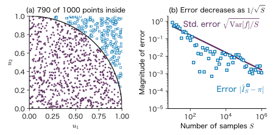
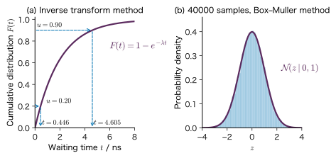
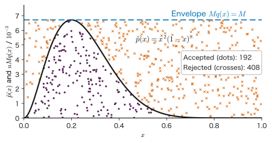
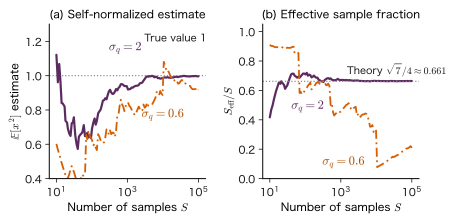
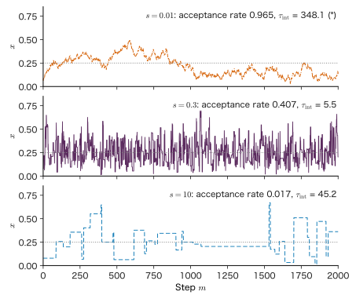
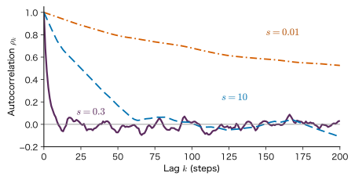
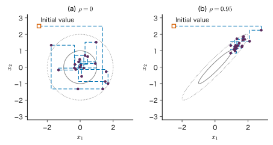
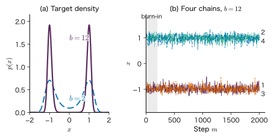
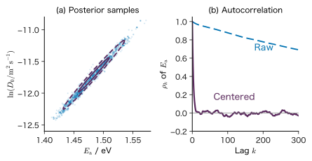

Chapter 21Sampling Methods — Integrating with Random Numbers
- We can write a posterior distribution as far as “likelihood × prior distribution,” but we cannot compute the normalization constant needed for the division (the marginal likelihood, also called the evidence). Even so, how can we draw samples from that distribution and obtain means and error bars?
- We ran a Markov chain Monte Carlo (MCMC) algorithm for 2000 steps, discarded the first 10%, and the trace plot looked settled. May we then say that we have “run it long enough”?
- When we estimate the activation energy in the Arrhenius equation for a diffusion coefficient by MCMC, why can the effective sample size (the number of samples converted to independent ones) differ by a factor of 100 even for the same computation time?
Drop grains of sand at random onto a square board and count the fraction that land inside a quarter circle drawn within it, and we obtain an approximate value of π. With 1000 grains the error is about 0.05; with a million grains it is about 0.002. Instead of computing the area by integration, we count with random numbers. This simple idea is the Monte Carlo method, the starting point of this chapter.
In machine learning, most predictions and assessments of uncertainty take the form of “an expectation (expected value) under some distribution.” The posterior mean, the posterior predictive distribution, error bars, and the marginal likelihood are all integrals with respect to a distribution. In Chapter 20 we approximated that distribution by a tractable form (such as a Gaussian distribution). In this chapter we leave the shape of the distribution untouched, draw samples from it, and replace the integral by an average. The first half (Sections 21.1–21.4) covers methods for generating independent samples (the inverse transform method, the Box–Muller method, rejection sampling, and importance sampling). The second half (Sections 21.5–21.10) covers Markov chain Monte Carlo, which can be used even when the normalization constant is unknown (the Metropolis–Hastings algorithm and Gibbs sampling), and its convergence diagnostics. Finally, we show that this method was born from computations in statistical mechanics, and how it is used for alloy configurations, adsorption, and the estimation of material parameters.
- You can derive that the Monte Carlo integration estimator is unbiased and that its standard error decreases as $1/\sqrt{S}$ regardless of the dimension.
- You can generate random numbers from the exponential distribution, the Cauchy distribution, and the Gaussian distribution from uniform random numbers by the inverse transform method and the Box–Muller method.
- You can show the correctness of rejection sampling and importance sampling, compute the acceptance rate and the effective sample size, and explain why they break down in high dimensions and with a light-tailed proposal distribution.
- You can prove stationarity from detailed balance, and show that the Metropolis–Hastings algorithm has the target distribution as its stationary distribution without the normalization constant. You can construct the transition matrix by hand for a three-state example.
- You can compute the autocorrelation, the integrated autocorrelation time, and the effective sample size, and explain the tuning of the proposal width and the slowness of Gibbs sampling.
- You can explain, using a double-well example, that discarding the burn-in does not guarantee convergence, and how to use $\hat{R}$ and trace plots and their limitations.
- You can relate the equations of this chapter to sampling from the Boltzmann distribution (the Ising model, alloy configurations, adsorption) and to MCMC for the posterior distribution of material parameters.
Sections for the introductory route: This chapter belongs to the detailed route. On the introductory route, read only Section 21.14 (Summary) and then proceed to Chapter 22.
Notation: Symbols Used in This Chapter
We write the target distribution (the distribution from which we want to draw samples) as $p(x)$ and its unnormalized form as $\tilde{p}(x)$: $p(x)=\tilde{p}(x)/Z$, $Z=\int\tilde{p}(x)\,\dd x$. In Bayesian inference, $x$ is the parameter $\bm{\theta}$, $\tilde{p}$ is $p(\data\mid\bm{\theta})\,p(\bm{\theta})$, and $Z$ is the marginal likelihood $p(\data)$. The number of samples is $S$, and the index of a sample is written as a superscript $(m)$, as in $x^{(m)}$ ($m=1,\dots,S$) (a subscript, as in $x_i$, denotes a component of a vector). The proposal width of the Metropolis–Hastings algorithm is the lowercase $s$ (to distinguish it from the number of samples $S$). The transition probability is always written with its arguments, as $T(x'\mid x)$, and is distinguished from the temperature $T$ in Section 21.10 and later by the form $k_{\mathrm B}T$. The variance of $f$ is written $\Var[f]$ and the standard deviation $\sqrt{\Var[f]}$ ($\sigma_f$ is not used, because it is the symbol for the signal standard deviation of a Gaussian process). The integrated autocorrelation time in Section 21.8 is written $\tau_{\mathrm{int}}$ (a quantity different from the temperature $\tau$ in Chapters 26 and 27). The autocorrelation $\rho_k$ in Section 21.8 is always written with its subscript, to distinguish it from the correlation coefficient $\rho$ (no subscript) in Section 21.9.
21.1 Monte Carlo Integration — Replacing an Expected Value with a Sample MeanDetailed Route
21.1.1 Counting pi with random numbers
Drop points $(u_1,u_2)$ into a square of side 1 using uniform random numbers. The probability that a point falls inside the quarter disk $u_1^{2}+u_2^{2}\le1$ is the area ratio $\pi/4$. Hence “the fraction that landed inside × 4” is an estimate of pi. Figure 21.1(a) shows the result of dropping 1000 points: 790 landed inside, so the estimate is $4\times0.790=3.16$. As we add points, the estimate approaches $\pi$, and its error shrinks at a rate of about $1/\sqrt{S}$ (Figure 21.1(b)).

21.1.2 Definition and properties of the estimator
In general, suppose we want to compute the expectation (expected value) of a function $f(x)$ under a distribution $p(x)$,
\begin{equation} I=\Ex_{p}[f(x)]=\int f(x)\,p(x)\,\dd x \label{eq:21-I} \end{equation}Here $x$ may be a scalar or a vector $\bm{x}\in\R^{D}$. In the example of pi, $x=(u_1,u_2)$, $p$ is the uniform distribution on the unit square, and $f(x)=4\cdot\mathbb{1}[u_1^{2}+u_2^{2}\le1]$ ($\mathbb{1}[\cdot]$ is 1 if the condition holds and 0 otherwise), so that $I=4\times\pi/4=\pi$.
Definition 21.1: Monte Carlo estimator
Using samples $x^{(1)},\dots,x^{(S)}$ drawn independently from $p(x)$, we estimate the expectation \eqref{eq:21-I} by
\begin{equation} \hat{I}_S=\frac{1}{S}\sum_{m=1}^{S}f\bigl(x^{(m)}\bigr) \label{eq:21-mc} \end{equation}This is called the Monte Carlo estimator.
Theorem 21.1: Unbiasedness and standard error
If the variance $\Var[f]\equiv\Var_{p}[f(x)]$ of $f(x)$ is finite, then $\Ex[\hat{I}_S]=I$ (unbiased) and $\Var[\hat{I}_S]=\Var[f]/S$. Therefore the spread of the estimator (the standard error) is $\sqrt{\Var[f]/S}$, which does not contain the dimension $D$ of $x$.
Proof
Write $f^{(m)}=f(x^{(m)})$. Each $x^{(m)}$ follows $p$, so $\Ex[f^{(m)}]=I$ and $\Var[f^{(m)}]=\Var[f]$. By the linearity of expectation (Chapter 2, Section 2.5),
$$ \Ex[\hat{I}_S]=\frac1S\sum_{m=1}^{S}\Ex[f^{(m)}]=\frac1S\cdot S\,I=I . $$Since the $x^{(m)}$ are independent of one another, the covariances among the $f^{(m)}$ are 0, and the variance of a sum is the sum of the variances (Chapter 2, Theorem 2.6). A constant $1/S$ comes out of a variance as its square, so
$$ \begin{aligned} \Var[\hat{I}_S]&=\frac{1}{S^{2}}\sum_{m=1}^{S}\Var[f^{(m)}]\\ &=\frac{1}{S^{2}}\cdot S\,\Var[f]=\frac{\Var[f]}{S} . \end{aligned} $$Taking the square root gives the standard error $\sqrt{\Var[f]/S}$. The dimension $D$ appears nowhere.
∎
Furthermore, by the central limit theorem (Chapter 2, Section 2.8), when $S$ is large, $\hat{I}_S$ approximately follows $\Normal(I,\Var[f]/S)$. Since $\Var[f]$ can be estimated by the sample variance $\widehat{\Var}[f]$, the interval “$\hat{I}_S\pm1.96\,\sqrt{\widehat{\Var}[f]/S}$” is an approximate 95% interval. This error estimate relies on the samples being independent. In Section 21.8, we correct for this in MCMC, where the samples are not independent.
21.1.3 Why Monte Carlo beats a grid in high dimensions
For a one-dimensional integral, if we take a grid of $n$ points and use Simpson's rule, the error decreases in proportion to $n^{-4}$. This is much faster than the $n^{-1/2}$ of Monte Carlo. In $D$ dimensions, however, a grid with $n$ points on each axis has a total of $N=n^{D}$ points. Rewriting the error $n^{-4}$ per axis in terms of $N$ gives $N^{-4/D}$, and comparing with the Monte Carlo rate $N^{-1/2}$, the condition $4/D\lt1/2$, that is, $D\gt8$, means that the Monte Carlo error decreases faster. Even a coarse grid of 10 points per axis requires $10^{10}$ points when $D=10$, so a grid is unusable for problems in which the posterior distribution has several dozen parameters. The property that the Monte Carlo error does not depend on the dimension is the foundation of all the methods in this chapter.
However, this holds only under the condition that we can draw independent samples from $p$, and drawing samples in high dimensions is itself difficult (Section 21.3 onward).
Example 21.1: Error in the estimate of pi
In the example of pi, (1) find the variance $\Var[f]$ of $f$. (2) Find the standard errors for $S=1000$ and $S=10^{4}$. (3) How many points are needed to make the standard error at most $10^{-3}$? (4) Is the estimate 3.16 in Figure 21.1(a) reasonable in view of the standard error in (2)?
Solution. (1) $f$ takes the value 4 with probability $\pi/4$ and 0 with probability $1-\pi/4$. We have $\Ex[f]=\pi$ and $\Ex[f^{2}]=16\cdot\pi/4=4\pi$, so (by the variance formula of Chapter 2, Theorem 2.5)
$$ \begin{aligned} \Var[f]&=\Ex[f^{2}]-(\Ex[f])^{2}\\ &=4\pi-\pi^{2}=\pi(4-\pi)\approx2.697 , \end{aligned} $$and $\sqrt{\Var[f]}\approx1.642$. (2) For $S=1000$, $1.642/\sqrt{1000}\approx0.0519$; for $S=10^{4}$, $1.642/100\approx0.0164$. (3) From $\sqrt{\Var[f]/S}\le10^{-3}$ we get $S\ge\Var[f]/10^{-6}\approx2.70\times10^{6}$ points. Each time we improve the third decimal place by one more digit, the number of points grows by a factor of 100. (4) The error $3.16-3.1416=0.018$ is about 0.35 times the standard error 0.052, which is well within the range of chance variation.
21.2 Generating Random Numbers — Pseudorandom Numbers, the Inverse Transform Method, and the Box–Muller MethodDetailed Route
21.2.1 Pseudorandom numbers and the seed
Random numbers made by a computer form a sequence computed one after another by a fixed recurrence relation, and they are not random in the true sense. They are called pseudorandom numbers. A good sequence of pseudorandom numbers is designed to be statistically indistinguishable from independent samples of the uniform distribution on the interval $[0,1)$. A representative example, the Mersenne Twister, has period $2^{19937}-1$ (Matsumoto & Nishimura, 1998). The Python computations in this book use NumPy's np.random.default_rng(seed), and the simulators use a small generator called mulberry32.
The initial value of the recurrence relation is called the seed. The same seed produces the same sequence, so a computation can be reproduced. When you report Monte Carlo results in a paper or a lab record, recording the seed and the generator lets others obtain the same numbers and check them. Conversely, with multiple chains (Section 21.10) or in parallel computation, if you do not use a different seed for each chain, you end up using the same sequence over and over.
In what follows, we assume that a uniform random number $u$ on the interval $[0,1)$ is available, and we build random numbers of other distributions from it.
21.2.2 The inverse transform method
Theorem 21.2: Inverse transform method
Suppose that the cumulative distribution function $F(x)=P(\text{random variable}\le x)$ of a continuous random variable is strictly monotone increasing and has an inverse function $F^{-1}$. If we draw $u$ from the uniform distribution on $(0,1)$ and set $x=F^{-1}(u)$, then $x$ follows the distribution with cumulative distribution function $F$.
Proof
For any $a$, since $F$ is an increasing function, the conditions “$F^{-1}(u)\le a$” and “$u\le F(a)$” are the same. For the uniform distribution, $P(u\le c)=c$ ($0\le c\le1$), so
$$ P\bigl(F^{-1}(u)\le a\bigr)=P\bigl(u\le F(a)\bigr)=F(a) . $$The left-hand side is exactly the cumulative distribution function of the $x$ we constructed, so the distribution of $x$ is $F$.
∎
As in Figure 21.2(a), we can read this by placing the uniform random number $u$ on the vertical axis and mapping it to the horizontal axis through the graph of the cumulative distribution function. Where the slope of $F$ is steep (where the density is high), many values of $u$ gather.
- Exponential distribution (Chapter 3, Example 3.1; rate $\lambda\gt0$, where this $\lambda$ is not a regularization coefficient): $p(t)=\lambda e^{-\lambda t}$ ($t\ge0$), $F(t)=1-e^{-\lambda t}$. Solving $u=1-e^{-\lambda t}$ for $t$ gives
- Since $1-u$ also follows the uniform distribution, $t=-\ln u/\lambda$ works as well (Chapter 2, Example 2.8 is the case $\lambda=1$).
- Cauchy distribution (Chapter 3, Section 3.7; location $x_0$, half width at half maximum $\gamma$): integrating $p(x)=\dfrac{1}{\pi}\dfrac{\gamma}{(x-x_0)^{2}+\gamma^{2}}$ gives $F(x)=\dfrac12+\dfrac1\pi\arctan\dfrac{x-x_0}{\gamma}$. Solving $u=F(x)$ for $x$ gives
The inverse transform method is the simplest and most reliable method for one-dimensional distributions whose $F^{-1}$ can be written in closed form. For the Gaussian distribution, $F$ is the error function, and its inverse cannot be written with elementary functions. So we use the following method.
21.2.3 The Box–Muller method
Producing a single Gaussian random number directly is difficult, but producing two as a pair becomes easy with a polar-coordinate computation. This is the Box–Muller method (Box & Muller, 1958).
Theorem 21.3: Box–Muller method
Let $u_1,u_2$ be independent uniform random numbers on $(0,1)$, and set
\begin{equation} \begin{aligned} z_1&=\sqrt{-2\ln u_1}\cos(2\pi u_2),\\ z_2&=\sqrt{-2\ln u_1}\sin(2\pi u_2) \end{aligned} \label{eq:21-bm} \end{equation}Then $z_1,z_2$ are independent and each follows the standard Gaussian distribution $\Normal(0,1)$.
Derivation: Retracing the change of variables to polar coordinates in reverse
The joint density of independent $z_1,z_2\sim\Normal(0,1)$ is
$$ p(z_1,z_2)=\frac{1}{2\pi}\exp\!\left(-\frac{z_1^{2}+z_2^{2}}{2}\right) $$which depends only on $z_1^{2}+z_2^{2}$. Changing to polar coordinates $z_1=r\cos\varphi$, $z_2=r\sin\varphi$ ($r\gt0$, $0\le\varphi\lt2\pi$), the area element is $\dd z_1\,\dd z_2=r\,\dd r\,\dd\varphi$ (the Jacobian determinant is $r$; University Mathematics, Section 7.3), so by the change of variables for several variables in Chapter 2, Section 2.6 (multiply the density by the absolute value of the Jacobian determinant),
$$ p(r,\varphi)=\frac{1}{2\pi}e^{-r^{2}/2}\cdot r=\underbrace{\frac{1}{2\pi}}_{\varphi\text{ density}}\times\underbrace{r\,e^{-r^{2}/2}}_{r\text{ density}} . $$Because it splits into a product, $r$ and $\varphi$ are independent, and $\varphi$ is uniformly distributed on $[0,2\pi)$. Moreover, setting $v=r^{2}/2$ gives $\dd v=r\,\dd r$, so the density of $v$ is $r e^{-r^{2}/2}\big/\abs{\dd v/\dd r}=e^{-v}$; that is, $v$ follows the exponential distribution with rate 1.
Therefore, in reverse, make an exponential random number $v=-\ln u_1$ (Eq. \eqref{eq:21-exp} with $\lambda=1$) and a uniform angle $\varphi=2\pi u_2$, set $r=\sqrt{2v}=\sqrt{-2\ln u_1}$, and return to Cartesian coordinates; this yields two independent standard Gaussian random numbers. This is Eq. \eqref{eq:21-bm}.
∎
A Gaussian random number with mean $\mu$ and variance $\sigma^{2}$ is made as $\mu+\sigma z$. A multivariate $\Normal(\bm{\mu},\bm{\Sigma})$ is made by writing $\bm{\Sigma}=\bm{L}\bm{L}^{\tp}$ (Cholesky decomposition) and forming $\bm{\mu}+\bm{L}\bm{z}$ ($\bm{z}$ is a vector of independent standard Gaussian random numbers). This works because $\Cov[\bm{L}\bm{z}]=\bm{L}\bm{I}\bm{L}^{\tp}=\bm{\Sigma}$.

Example 21.2: From uniform random numbers to the exponential, Cauchy, and Gaussian distributions
(1) Suppose the waiting time for a point defect to hop follows an exponential distribution with rate $\lambda=0.5\ \mathrm{ns^{-1}}$ (a setting for teaching purposes). From $u=0.20$ and $u=0.90$, make waiting times using Eq. \eqref{eq:21-exp}. (2) Suppose the shape of a Raman line is a Cauchy distribution (Lorentzian) with $x_0=520\ \mathrm{cm^{-1}}$ and $\gamma=2\ \mathrm{cm^{-1}}$. From $u=0.90$ and $u=0.25$, make $x$ using Eq. \eqref{eq:21-cauchy}. (3) From $(u_1,u_2)=(0.30,\,0.80)$, make $(z_1,z_2)$ by the Box–Muller method.
Solution. (1) $t=-\ln(1-0.20)/0.5=-2\ln0.80$ $=2\times0.2231=0.446\ \mathrm{ns}$. $t=-\ln(0.10)/0.5$ $=2\times2.3026=4.605\ \mathrm{ns}$. A value longer than the mean waiting time $1/\lambda=2\ \mathrm{ns}$ appears when $u$ exceeds $1-e^{-1}\approx0.632$.
(2) For $u=0.90$: $\pi(0.90-0.5)=0.4\pi$ and $\tan(0.4\pi)=3.0777$, so $x=520+2\times3.0777=526.16\ \mathrm{cm^{-1}}$. For $u=0.25$: $\tan(-0.25\pi)=-1$, so $x=520-2=518\ \mathrm{cm^{-1}}$. The values $u=0.25$ and $0.75$ are mapped to points at a distance of the half width at half maximum $\gamma$ from the center. When $u$ is close to 0 or 1, $\tan$ diverges and very distant values appear. This is the heavy tail of the Cauchy distribution.
(3) $-2\ln0.30=-2\times(-1.2040)=2.4079$, $r=\sqrt{2.4079}=1.5518$. $2\pi\times0.80$ is $288^{\circ}$, with $\cos288^{\circ}=0.3090$ and $\sin288^{\circ}=-0.9511$. Therefore $z_1=1.5518\times0.3090=0.4795$ and $z_2=1.5518\times(-0.9511)=-1.4758$.
21.3 Rejection Sampling — Dropping Points Under an EnvelopeDetailed Route
21.3.1 The idea
The inverse transform method cannot be used unless $F^{-1}$ is known. However, if we can compute the value of the unnormalized density $\tilde{p}(x)$, we can generate samples of $p$ with the same idea of “dropping points and counting them” that we used in the example of estimating π. If we drop points uniformly in the region under the graph of $\tilde{p}(x)$, the $x$ coordinates of those points follow $p(x)$. Since we cannot draw that region directly, we cover it from above with $Mq(x)$ (the envelope), a constant multiple of a distribution $q(x)$ (the proposal distribution) from which samples are easy to draw; we drop points uniformly under the envelope and keep only the points that fall under $\tilde{p}$ (Figure 21.3).
Definition 21.2: Rejection sampling
Choose a constant $M\gt0$ such that $\tilde{p}(x)\le M\,q(x)$ for all $x$. Repeat the following.
- Draw $x\sim q(x)$, and draw $u\sim[0,1)$ (the uniform distribution).
- If $u\le\dfrac{\tilde{p}(x)}{M\,q(x)}$, accept $x$ as a sample. Otherwise discard it (rejection).
Theorem 21.4: Correctness and acceptance rate of rejection sampling
An accepted $x$ follows $p(x)=\tilde{p}(x)/Z$. The probability of acceptance in a single trial is $Z/M$. In particular, if $\tilde{p}$ is normalized ($Z=1$), the acceptance rate is $1/M$.
Proof
In a single trial, the probability that “$x$ falls in $[a,a+\dd a]$ and is accepted” is the product of the probability $q(a)\,\dd a$ of drawing $x$ from $q$ in that interval and the acceptance probability $\tilde{p}(a)/(Mq(a))$ there (which is $\le1$, so it makes sense as a probability).
$$ \begin{aligned} &P(x\in[a,a+\dd a],\ \text{accepted})\\ &\quad=q(a)\,\dd a\times\frac{\tilde{p}(a)}{M\,q(a)}=\frac{\tilde{p}(a)}{M}\,\dd a . \end{aligned} $$The key point is that $q$ cancels. Integrating over all $a$ gives the probability of acceptance:
$$ P(\text{accepted})=\int\frac{\tilde{p}(a)}{M}\,\dd a=\frac{Z}{M} $$By the definition of conditional probability (Chapter 2, Section 2.2), the density of $x$ given that it was accepted is
$$ \begin{aligned} &\frac{P(x\in[a,a+\dd a],\ \text{accepted})}{P(\text{accepted})\,\dd a}\\ &\quad=\frac{\tilde{p}(a)/M}{Z/M}=\frac{\tilde{p}(a)}{Z}=p(a) . \end{aligned} $$∎
The number of trials until acceptance follows a geometric distribution with success probability $Z/M$, and its mean is $M/Z$ trials. We choose $M$ as small as possible, that is, so that $Mq$ hugs $\tilde{p}$ closely. If the tails of $q$ are lighter than those of $\tilde{p}$ (they go to 0 faster), then $\tilde{p}\le Mq$ cannot be achieved for any $M$, so we choose a proposal distribution with heavy tails.

Example 21.3: Drawing Beta(3,9) with a uniform envelope
If we estimate the success rate $\mu$ of a sample that succeeded in 2 of 10 trials by Bayesian inference with a uniform prior distribution, the posterior distribution is $\mathrm{Beta}(\mu\mid3,9)$ (Chapter 4, Section 4.4). In this chapter we write $x=\mu$ and bound $\tilde{p}(x)=x^{2}(1-x)^{8}$ ($0\lt x\lt1$) by the uniform distribution $q(x)=1$. (1) Find the smallest $M$ satisfying $\tilde{p}\le M$. (2) Find $Z=\int_0^1\tilde{p}\,\dd x$ and the acceptance rate. (3) On average, how many proposals are needed to obtain one sample? (4) Is the pair $x=0.5$, $u=0.10$ accepted?
Solution. (1) Differentiating $\ln\tilde{p}=2\ln x+8\ln(1-x)$ and setting the result to 0 gives $2/x-8/(1-x)=0$, that is, $2(1-x)=8x$, so $x=0.2$. The maximum is $M=\tilde{p}(0.2)=0.04\times0.8^{8}$ $=0.04\times0.16777=6.711\times10^{-3}$.
(2) By the beta function (University Mathematics, Chapter 32), $Z=B(3,9)=\dfrac{2!\,8!}{11!}$ $=\dfrac{2\times40320}{39916800}=\dfrac{1}{495}$ $\approx2.020\times10^{-3}$. The acceptance rate is $Z/M=0.002020/0.006711$ $\approx0.301$.
(3) $M/Z\approx3.32$ proposals.
(4) $\tilde{p}(0.5)=0.25\times0.5^{8}=9.766\times10^{-4}$, and $\tilde{p}(0.5)/M=0.1455$. Since $u=0.10\le0.1455$, it is accepted. With the same $u=0.10$ but $x=0.9$, we have $\tilde{p}(0.9)=0.81\times10^{-8}$, the ratio is almost 0, and the point is rejected.
21.3.2 Breakdown in high dimensions
Rejection sampling works well in one or two dimensions, but as the dimension increases the acceptance rate falls exponentially. Let the target be the $D$-dimensional standard Gaussian distribution $\Normal(\bm{0},\bm{I})$ and the proposal a slightly wider $\Normal(\bm{0},\sigma_q^{2}\bm{I})$ ($\sigma_q\gt1$). The density ratio is
$$ \frac{p(\bm{x})}{q(\bm{x})}=\sigma_q^{D}\exp\!\left[-\frac{\norm{\bm{x}}^{2}}{2}\left(1-\frac{1}{\sigma_q^{2}}\right)\right]\le\sigma_q^{D} $$The maximum occurs at $\bm{x}=\bm{0}$, so the smallest $M$ is $\sigma_q^{D}$ and the acceptance rate is $\sigma_q^{-D}$. Even if the proposal distribution is only 10% wider ($\sigma_q=1.1$), the acceptance rate drops to 0.909 for $D=1$, 0.386 for $D=10$, and $7.3\times10^{-5}$ for $D=100$. In 100 dimensions, about 14000 proposals are needed for a single sample. In high dimensions, constructing an envelope is itself impossible. This is why we move on to the Markov chain methods from Section 21.5 onward.
21.4 Importance Sampling — Draw from Another Distribution and Correct with WeightsDetailed Route
21.4.1 Weighted averages
If all we want is an expectation, the samples need not follow $p$. It suffices to draw from an easily sampled distribution $q$ and to compensate for the discrepancy between $p$ and $q$ with weights. Assuming that $q(x)\gt0$ holds wherever $p(x)\gt0$,
\begin{equation} \begin{aligned} I&=\int f(x)\,p(x)\,\dd x\\ &=\int f(x)\,\frac{p(x)}{q(x)}\,q(x)\,\dd x\\ &=\Ex_{q}\!\left[f(x)\,w(x)\right],\\ w(x)&=\frac{p(x)}{q(x)} \end{aligned} \label{eq:21-is} \end{equation}Here the second equality simply multiplies by $q/q=1$. With $x^{(m)}$ drawn from $q$, setting
\begin{equation} \begin{aligned} \hat{I}_{\mathrm{IS}}&=\frac1S\sum_{m=1}^{S}w^{(m)}f\bigl(x^{(m)}\bigr),\\ w^{(m)}&=\frac{p(x^{(m)})}{q(x^{(m)})} \end{aligned} \label{eq:21-is-est} \end{equation}gives an unbiased estimator by the same computation as in Theorem 21.1 (we are averaging $wf$ instead of $f$ under $q$). This is called importance sampling. The quantity $w$ is called the importance weight.
21.4.2 When the normalization constant is unknown: self-normalization
When we can compute only $\tilde{p}$ instead of $p$, we use $\tilde{w}^{(m)}=\tilde{p}(x^{(m)})/q(x^{(m)})$. Since $\Ex_q[\tilde{w}]=\int(\tilde{p}/q)\,q\,\dd x=Z$, first
\begin{equation} \hat{Z}=\frac1S\sum_{m=1}^{S}\tilde{w}^{(m)} \label{eq:21-zhat} \end{equation}is an unbiased estimator of $Z$ (the normalization constant itself is obtained). For the expectation, we estimate the numerator and the denominator from the same samples and set
\begin{equation} \begin{aligned} \hat{I}_{\mathrm{SN}}&=\frac{\sum_{m}\tilde{w}^{(m)}f(x^{(m)})}{\sum_{m}\tilde{w}^{(m)}}\\ &=\sum_{m=1}^{S}\bar{w}^{(m)}f\bigl(x^{(m)}\bigr),\\ \bar{w}^{(m)}&=\frac{\tilde{w}^{(m)}}{\sum_{m'}\tilde{w}^{(m')}} \end{aligned} \label{eq:21-sn} \end{equation}This is called self-normalized importance sampling. The numerator is an unbiased estimator of $Z\,I$ and the denominator of $Z$, and taking the ratio cancels $Z$. The expectation of a ratio does not equal the ratio of expectations, so $\hat{I}_{\mathrm{SN}}$ has a slight bias, but it converges to $I$ as $S\to\infty$.
21.4.3 The effective sample size and the danger of a light-tailed proposal distribution
If the weights concentrate on a few samples, then even after drawing $S$ samples we effectively have the information of only a few. A measure of this is the effective sample size.
\begin{equation} S_{\mathrm{eff}}=\frac{\left(\sum_{m}\tilde{w}^{(m)}\right)^{2}}{\sum_{m}\bigl(\tilde{w}^{(m)}\bigr)^{2}} \label{eq:21-ess-is} \end{equation}If all the weights are equal, $S_{\mathrm{eff}}=S$; if only one is nonzero, $S_{\mathrm{eff}}=1$ (multiplying the weights by a constant does not change the value). When $S$ is large, $S_{\mathrm{eff}}/S$ approaches $(\Ex_q[w])^{2}/\Ex_q[w^{2}]=1/\Ex_q[w^{2}]$ ($w=p/q$ is the normalized weight).
$\Ex_q[w^{2}]=\int p^{2}/q\,\dd x$ diverges if the tails of $q$ are lighter than those of $p$. Computing with the target $p=\Normal(0,1)$ and the proposal $q=\Normal(0,\sigma_q^{2})$ gives
$$ \frac{p(x)^{2}}{q(x)}=\frac{\sigma_q}{\sqrt{2\pi}}\exp\!\left[-x^{2}\left(1-\frac{1}{2\sigma_q^{2}}\right)\right] $$Hence the integral is finite only when $1-1/(2\sigma_q^{2})\gt0$, that is, $\sigma_q^{2}\gt1/2$, and from the Gaussian integral $\int e^{-cx^{2}}\dd x=\sqrt{\pi/c}$ we obtain
\begin{equation} \Ex_q[w^{2}]=\frac{\sigma_q^{2}}{\sqrt{2\sigma_q^{2}-1}} \label{eq:21-w2} \end{equation}(for $\sigma_q^{2}\gt\tfrac12$). For $\sigma_q^{2}\le1/2$ it is infinite. In that case the variance of the estimator is infinite, and a rarely occurring huge weight suddenly moves the estimate. The trouble is that for finite $S$ the sample variance of the weights looks finite, so the computation appears to have “converged” (the case $\sigma_q=0.6$ in Figure 21.4). Choose the proposal distribution wider than the target, with heavier tails.

Example 21.4: Importance sampling with three samples
Let the target be $\tilde{p}(x)=e^{-x^{2}/2}$ ($Z=\sqrt{2\pi}\approx2.507$) and the proposal $q=\Normal(0,2^{2})$. Drawing from $q$ gave $x=-1.0,\ 0.5,\ 2.5$. (1) Find each weight $\tilde{w}=\tilde{p}/q$. (2) Estimate $Z$ with Eq. \eqref{eq:21-zhat}. (3) Estimate $\Ex_p[x^{2}]$ by self-normalization (the true value is 1). (4) Find the effective sample size. (5) Find $S_{\mathrm{eff}}/S$ for large $S$ using Eq. \eqref{eq:21-w2}.
Solution. (1) Since $q(x)=\dfrac{1}{2\sqrt{2\pi}}e^{-x^{2}/8}$, we have $\tilde{w}(x)=2\sqrt{2\pi}\,e^{-x^{2}/2+x^{2}/8}=2\sqrt{2\pi}\,e^{-3x^{2}/8}$. Using $2\sqrt{2\pi}=5.013$,
$$ \begin{aligned} \tilde{w}(-1.0)&=5.013\,e^{-0.375}=3.446,\\ \tilde{w}(0.5)&=5.013\,e^{-0.09375}=4.565,\\ \tilde{w}(2.5)&=5.013\,e^{-2.344}=0.481 . \end{aligned} $$(2) $\hat{Z}=(3.446+4.565+0.481)/3$ $=8.492/3=2.83$ (the true value is 2.507; with only three samples the error is large). (3) The normalized weights are $\bar{w}=(0.406,\ 0.538,\ 0.057)$. $\hat{I}_{\mathrm{SN}}=0.406\times1.00$ $+0.538\times0.25$ $+0.057\times6.25$ $=0.406+0.134+0.354$ $=0.894$. (4) The denominator is $3.446^{2}+4.565^{2}+0.481^{2}=32.94$ and the numerator is $8.492^{2}=72.11$, so $S_{\mathrm{eff}}=72.11/32.94=2.19$. Of the three samples, this is effectively 2.2 samples. (5) Substituting $\sigma_q=2$ gives $\Ex_q[w^{2}]=4/\sqrt{7}=1.512$, and $S_{\mathrm{eff}}/S\to1/1.512=\sqrt{7}/4\approx0.661$ (the dotted line in Figure 21.4(b)).
In high dimensions, even if $\Ex_q[w^{2}]$ in each dimension is only slightly larger than 1, it is raised to the $D$th power, and $S_{\mathrm{eff}}/S$ becomes exponentially small.
21.5 Markov Chains — Stationary Distributions and Detailed BalanceDetailed Route
21.5.1 Giving up independent samples
The methods of Sections 21.3–21.4 require us to prepare, in one shot, a proposal distribution $q$ that covers all of $p$, and they break down in high dimensions. Let us change the idea: we make the next sample near the current sample. The samples are then no longer independent, and form a sequence in which each depends on the previous one. Designing the way of walking so that this sequence “follows $p$ if it walks long enough” is the Markov chain Monte Carlo (MCMC) method. The tool for that design is the theory of Markov chains.
Definition 21.3: Markov chain and transition probability
A sequence of random variables $x^{(0)},x^{(1)},x^{(2)},\dots$ for which the distribution of the next value is determined by the current value only and does not depend on earlier values,
\begin{equation} \begin{aligned} &p\bigl(x^{(m+1)}\mid x^{(m)},\\ &\qquad x^{(m-1)},\dots,x^{(0)}\bigr)\\ &\quad=T\bigl(x^{(m+1)}\mid x^{(m)}\bigr) \end{aligned} \label{eq:21-markov} \end{equation}is called a (time-homogeneous) Markov chain, and $T(x'\mid x)$ is called the transition probability (the transition density in the continuous case). When $x$ takes $K$ states $\{1,\dots,K\}$, we use the transition matrix $\bm{T}\in\R^{K\times K}$ whose entries are $T_{ij}=T(x'=j\mid x=i)$. Rows correspond to the “current state” and columns to the “next state,” and each row sums to 1 (the same orientation as $A_{ij}$ of the hidden Markov model in Chapter 22).
Let the distribution at step $m$ be the row vector $\bm{\pi}^{(m)}=(\pi^{(m)}_1,\dots,\pi^{(m)}_K)$ (with $\pi^{(m)}_i=P(x^{(m)}=i)$; here $\pi$ is not the circle constant). Then the sum rule and the product rule (Chapter 2, Section 2.2) give
\begin{equation} \begin{aligned} \pi^{(m+1)}_j&=\sum_{i=1}^{K}\pi^{(m)}_i\,T_{ij},\\ \bm{\pi}^{(m+1)}&=\bm{\pi}^{(m)}\bm{T} \end{aligned} \label{eq:21-evolve} \end{equation}This holds because “the probability of being in $j$ next” is the sum, over all $i$, of “the probability of being in $i$ now and moving from $i$ to $j$.” In the continuous case the sum becomes an integral: $\pi^{(m+1)}(x')=\int T(x'\mid x)\,\pi^{(m)}(x)\,\dd x$.
Definition 21.4: Stationary distribution
A distribution $\pi$ satisfying $\bm{\pi}\bm{T}=\bm{\pi}$ (in the continuous case, $\int T(x'\mid x)\,\pi(x)\,\dd x=\pi(x')$) is called a stationary distribution (invariant distribution) of the transition probability $T$. Once the chain follows $\pi$, it keeps following $\pi$ forever after.
The goal of MCMC is to construct a transition probability $T$ whose stationary distribution is the target $p$ and, furthermore, to make $\bm{\pi}^{(m)}$ approach $p$ no matter where the chain starts. A simple sufficient condition that guarantees the former is detailed balance.
21.5.2 Detailed balance
Theorem 21.5: Detailed balance implies stationarity
If, for all $x,x'$,
\begin{equation} \begin{aligned} &p(x)\,T(x'\mid x)\\ &\quad=p(x')\,T(x\mid x') \end{aligned} \label{eq:21-db} \end{equation}holds (detailed balance), then $p$ is a stationary distribution of $T$.
Proof
We show the discrete case (in the continuous case one only replaces sums by integrals). Applying Eq. \eqref{eq:21-db} to each term of the left-hand side $\sum_x p(x)T(x'\mid x)$ of the stationarity condition, we obtain
$$ \begin{aligned} &\sum_{x}p(x)\,T(x'\mid x)\\ &\quad=\sum_{x}p(x')\,T(x\mid x') . \end{aligned} $$Since $p(x')$ on the right-hand side does not depend on the summation index $x$, it can be taken outside:
$$ \begin{aligned} \sum_{x}p(x')\,T(x\mid x')&=p(x')\sum_{x}T(x\mid x')\\ &=p(x')\times1=p(x') . \end{aligned} $$In the last step we used that “the total probability of going somewhere next from $x'$ is 1” (each row of the transition matrix sums to 1). Thus $\sum_x p(x)T(x'\mid x)=p(x')$, that is, stationarity has been shown.
∎
Detailed balance is the condition that the amount of probability flowing from $x$ to $x'$ equals the amount returning from $x'$ to $x$ for every pair. Stationarity requires only that the total amount entering each state equal the total amount leaving it, so detailed balance is stronger. There are chains that are stationary but do not satisfy detailed balance (the chain in Exercise 21.4 that cycles around in one direction). The advantage of detailed balance is that it is a local condition on two states at a time, so it can be checked without knowing the overall sum (the normalization constant).
21.5.3 Conditions for convergence: irreducibility and aperiodicity
Merely having a stationary distribution does not guarantee approaching $p$ from any starting point. The following two conditions are needed.
- Irreducibility (irreducible): from any state one can reach any state, in some number of steps, with positive probability. If there are regions that cannot be reached, the range one sees depends on the starting point.
- Aperiodicity (aperiodic): there is no rule of returning to the same state at a fixed period. For example, $\bm{T}=\begin{pmatrix}0&1\\1&0\end{pmatrix}$ moves back and forth between the two states, and starting from state 1, $\bm{\pi}^{(m)}$ alternates between $(1,0)$ and $(0,1)$ and does not converge.
For a chain with finitely many states, if it is irreducible and aperiodic, the stationary distribution is unique, and $\bm{\pi}^{(m)}\to\bm{\pi}$ from any initial distribution (the ergodic theorem for Markov chains; we leave the proof to Brooks et al. (eds.) (2011) and similar references). Moreover, the time average $\frac1S\sum_m f(x^{(m)})$ along a single chain converges to $\Ex_p[f]$. The property that this “time average = average over the distribution” holds is called ergodicity. This is the same word as the ergodic hypothesis in statistical mechanics (Introductory University Physics, Chapter 48, Section 48.3), but here it is a property that is mathematically guaranteed for an artificially constructed chain.
However, the theorem says only that the chain “eventually approaches.” How many steps it takes is determined by how the chain is constructed and by the shape of the target, and all the practical difficulties lie here (Sections 21.8–21.10).
Example 21.5: Stationary distribution and speed of convergence of a two-state chain
Consider the two-state transition matrix $\bm{T}=\begin{pmatrix}0.9&0.1\\0.2&0.8\end{pmatrix}$. (1) Find the stationary distribution from detailed balance. (2) Starting from state 1 ($\bm{\pi}^{(0)}=(1,0)$), show that $\pi^{(m)}_1=\tfrac23+\tfrac13(0.7)^{m}$, and find the value at $m=10$. (3) For $\bm{T}=\begin{pmatrix}0&1\\1&0\end{pmatrix}$, verify that although $(\tfrac12,\tfrac12)$ is a stationary distribution satisfying detailed balance, the chain starting from $(1,0)$ does not converge.
Solution. (1) For two states, detailed balance is a single equation $p_1T_{12}=p_2T_{21}$, that is, $0.1\,p_1=0.2\,p_2$. Together with $p_1+p_2=1$ this gives $p_1=2/3$, $p_2=1/3$.
(2) By Eq. \eqref{eq:21-evolve}, $\pi^{(m+1)}_1=0.9\,\pi^{(m)}_1+0.2\,(1-\pi^{(m)}_1)$ $=0.2+0.7\,\pi^{(m)}_1$. Subtracting $\tfrac23$ from both sides gives $\pi^{(m+1)}_1-\tfrac23=0.7\,(\pi^{(m)}_1-\tfrac23)$, so the deviation is multiplied by 0.7 at every step, and $\pi^{(m)}_1=\tfrac23+\tfrac13(0.7)^{m}$. At $m=10$ the value is 0.6761. The number 0.7 is the eigenvalue of $\bm{T}$ other than 1, and the closer it is to 1, the slower the convergence.
(3) Since $p_1T_{12}=\tfrac12\times1=\tfrac12=p_2T_{21}$, detailed balance holds, and $(\tfrac12,\tfrac12)\bm{T}=(\tfrac12,\tfrac12)$. However, $(1,0)\bm{T}=(0,1)$ and $(0,1)\bm{T}=(1,0)$ alternate, and the chain does not converge. This is because the eigenvalues are $1$ and $-1$, and the deviation with $\abs{-1}=1$ never decreases (period 2).
The general formula for the stationary distribution and speed of convergence of a two-state chain, and its relation to the time spent staying in a state, are treated from the side of models of sequence data in Chapter 22, Section 22.2 (Formula 22.2). The purpose of this example is to see the roles of detailed balance and periodicity.
21.6 The Metropolis–Hastings Algorithm — A Chain That Does Not Need the Normalization ConstantDetailed Route
21.6.1 Procedure
The Metropolis–Hastings algorithm (MH algorithm; Metropolis et al., 1953; Hastings, 1970) is a method that builds a $T$ satisfying detailed balance mechanically, for any $\tilde{p}$. It splits the move into two stages: “propose where to move, then decide probabilistically whether to accept or reject.”
Definition 21.5: The Metropolis–Hastings algorithm
Choose a proposal distribution $q(x'\mid x)$ (a distribution that produces a candidate $x'$ from the current $x$), and, starting from an initial value $x^{(0)}$, repeat the following.
- Draw a candidate $x'\sim q(x'\mid x^{(m)})$.
- Compute the ratio
- Then draw a uniform random number $u\sim[0,1)$; if $u\lt\min(1,r)$, accept and set $x^{(m+1)}=x'$; otherwise reject and set $x^{(m+1)}=x^{(m)}$.
$\min(1,r)$ is called the acceptance probability. Even when the candidate is rejected, the current value is counted once more as a sample (if it is not counted, the distribution is distorted).
Only the ratio of $\tilde{p}$ appears in Eq. \eqref{eq:21-mh-r}, so the $Z$ in $\tilde{p}=Zp$ cancels and disappears. For a posterior distribution, it suffices to compute the ratio of $p(\data\mid\bm{\theta}')p(\bm{\theta}')$ to $p(\data\mid\bm{\theta})p(\bm{\theta})$; the marginal likelihood $p(\data)$ is not needed. In numerical computation, to avoid overflow, we compute $\ln r=\ln\tilde{p}(x')-\ln\tilde{p}(x)$ $+\ln q(x\mid x')-\ln q(x'\mid x)$ and make the decision with $\ln u\lt\ln r$.
When the proposal is symmetric, that is, $q(x'\mid x)=q(x\mid x')$, $q$ also cancels and $r=\tilde{p}(x')/\tilde{p}(x)$. This is the original Metropolis algorithm. The standard example is the random-walk proposal
\begin{equation} x'=x+s\,\varepsilon,\quad \varepsilon\sim\Normal(0,1) \label{eq:21-rw} \end{equation}where $s\gt0$ is called the proposal width. A proposal in the direction in which $\tilde{p}$ increases ($r\ge1$) is always accepted, and a proposal in the direction in which it decreases is accepted with probability equal to the ratio $r$. By not only climbing the hill but occasionally going down, the chain visits even the tails of the distribution in proportion to their weights.
21.6.2 Proof of detailed balance
Theorem 21.6: The Metropolis–Hastings algorithm satisfies detailed balance
The transition probability $T$ of Definition 21.5 satisfies detailed balance \eqref{eq:21-db} for the target $p=\tilde{p}/Z$. Therefore $p$ is a stationary distribution of $T$.
Proof
A transition to $x'\ne x$ occurs only when “$x'$ is proposed and is accepted,” so
$$ \begin{aligned} T(x'\mid x)&=q(x'\mid x)\,\min(1,r)\qquad(x'\ne x),\\ r&=\frac{\tilde{p}(x')\,q(x\mid x')}{\tilde{p}(x)\,q(x'\mid x)} \end{aligned} $$holds. Multiply both sides by $p(x)=\tilde{p}(x)/Z$. For a positive number $c$ we have $c\min(1,a)=\min(c,ca)$, so with $c=\tilde{p}(x)q(x'\mid x)/Z$,
$$ \begin{aligned} p(x)\,T(x'\mid x)&=\frac{1}{Z}\min\!\Bigl(\tilde{p}(x)\,q(x'\mid x),\\ &\qquad\qquad\tilde{p}(x)\,q(x'\mid x)\,r\Bigr)\\ &=\frac{1}{Z}\min\!\Bigl(\tilde{p}(x)\,q(x'\mid x),\\ &\qquad\qquad\tilde{p}(x')\,q(x\mid x')\Bigr) . \end{aligned} $$In the second line we used $\tilde{p}(x)q(x'\mid x)\,r=\tilde{p}(x')q(x\mid x')$ (the definition of $r$). The resulting expression is unchanged when $x$ and $x'$ are interchanged (the two arguments of $\min$ merely swap places). Therefore $p(x)T(x'\mid x)=p(x')T(x\mid x')$ holds for $x'\ne x$. For $x'=x$ (a transition that stays in place, including rejections), both sides of Eq. \eqref{eq:21-db} are the same expression, so it holds. By Theorem 21.5, $p$ is a stationary distribution.
∎
As for convergence (irreducibility and aperiodicity), for example with the random-walk proposal \eqref{eq:21-rw}, the chain is irreducible if the region where $\tilde{p}\gt0$ is connected, and it is aperiodic because, if rejection occurs with positive probability, there are transitions that stay in place. However, this is only a guarantee of “eventually,” and as we will see in Section 21.10, if the connection is thin, what happens in practice is the same as if the chain were not irreducible.
Example 21.6: Advancing the MH algorithm two steps on a double well
Let the target be $\tilde{p}(x)=\exp[-2(x^{2}-1)^{2}]$ (the double well of Section 21.10 with $b=2$), and let the proposal be Eq. \eqref{eq:21-rw} with $s=0.3$. Starting from $x^{(0)}=-1.2327$, we drew $\varepsilon=-1.3411$ and $u=0.7392$ at the first step, and $\varepsilon=1.8867$ and $u=0.7207$ at the second step. Find the candidate $x'$, $\ln r$, $r$, and whether it is accepted or rejected at each step. (These are the same numbers as the first two steps of the default chain 1 of Simulator 21.1.)
Solution. We use $\ln\tilde{p}(x)=-2(x^{2}-1)^{2}$. For $\ln\tilde{p}(-1.2327)$: $x^{2}=1.5196$, $x^{2}-1=0.5196$, squaring gives 0.2700, and applying $\times(-2)$ gives $-0.5399$.
Step 1: $x'=-1.2327+0.3\times(-1.3411)$ $=-1.6350$. $x'^{2}=2.6733$, $x'^{2}-1=1.6733$, squaring gives 2.8000, and $\ln\tilde{p}(x')=-5.6000$. $\ln r=-5.6000-(-0.5399)=-5.0602$, $r=e^{-5.0602}=0.00634$. Since $u=0.7392\gt0.00634$, we reject, and $x^{(1)}=-1.2327$ (the same value is counted once more). A proposal that climbs the steep outer wall of the well is almost always refused.
Step 2: $x'=-1.2327+0.3\times1.8867=-0.6667$. $x'^{2}=0.4445$, $x'^{2}-1=-0.5555$, squaring gives 0.3086, and $\ln\tilde{p}(x')=-0.6172$. $\ln r=-0.6172+0.5399=-0.0774$, $r=0.926$. Since $u=0.7207\lt0.926$, we accept, and $x^{(2)}=-0.6667$. Even when $r\lt1$ (a proposal that goes down a little), it is usually accepted if the drop is small.
21.7 Hand Calculation — The Transition Matrix of a Three-State Metropolis AlgorithmDetailed Route
For three discrete states, we write out the entire transition matrix of the MH algorithm and verify Theorems 21.5 and 21.6 numerically. Let the target weights be $\tilde{p}=(2,\ 3,\ 5)$ ($Z=10$, $\bm{p}=(0.2,\ 0.3,\ 0.5)$), and let the proposal be “pick either of the two states different from the current one, each with probability $1/2$”: $Q_{ij}=q(j\mid i)=1/2$ ($j\ne i$), $Q_{ii}=0$. The proposal is symmetric ($Q_{ij}=Q_{ji}$), so this is a Metropolis algorithm, and the transition probability to $j\ne i$ is
\begin{equation} \begin{aligned} T_{ij}&=Q_{ij}\min\!\left(1,\ \frac{\tilde{p}_j}{\tilde{p}_i}\right),\\ T_{ii}&=1-\sum_{j\ne i}T_{ij} \end{aligned} \label{eq:21-T3} \end{equation}Here $T_{ii}$ is the probability that “a different state was proposed but rejected.”
Example 21.7: Building the three-state transition matrix and verifying the stationary distribution
In the setup above, (1) find the transition matrix $\bm{T}$ in fractions. (2) Verify detailed balance for all three pairs. (3) Verify $\bm{p}\bm{T}=\bm{p}$. (4) Find the distribution after one step from the uniform initial distribution $\bm{\pi}^{(0)}=(\tfrac13,\tfrac13,\tfrac13)$. (5) How does $\bm{T}$ change if $\tilde{p}$ is multiplied by 10 to give $(20,30,50)$?
Solution. (1) From state 1: $T_{12}=\tfrac12\min(1,\tfrac32)=\tfrac12$, $T_{13}=\tfrac12\min(1,\tfrac52)=\tfrac12$, $T_{11}=1-\tfrac12-\tfrac12=0$. From state 2: $T_{21}=\tfrac12\min(1,\tfrac23)=\tfrac13$, $T_{23}=\tfrac12\min(1,\tfrac53)=\tfrac12$, $T_{22}=1-\tfrac13-\tfrac12=\tfrac16$. From state 3: $T_{31}=\tfrac12\cdot\tfrac25=\tfrac15$, $T_{32}=\tfrac12\cdot\tfrac35=\tfrac{3}{10}$, $T_{33}=1-\tfrac15-\tfrac3{10}=\tfrac12$.
$$ \bm{T}=\begin{pmatrix}0&\tfrac12&\tfrac12\\[2pt] \tfrac13&\tfrac16&\tfrac12\\[2pt] \tfrac15&\tfrac{3}{10}&\tfrac12\end{pmatrix} $$The sum of each row is 1. (2) $p_1T_{12}=0.2\times\tfrac12=\tfrac1{10}$, $p_2T_{21}=0.3\times\tfrac13=\tfrac1{10}$. $p_1T_{13}=0.2\times\tfrac12=\tfrac1{10}$, $p_3T_{31}=0.5\times\tfrac15=\tfrac1{10}$. $p_2T_{23}=0.3\times\tfrac12=\tfrac{3}{20}$, $p_3T_{32}=0.5\times\tfrac3{10}=\tfrac{3}{20}$. All three pairs are equal.
(3) First component: $0.2\cdot0+0.3\cdot\tfrac13+0.5\cdot\tfrac15$ $=0+0.1+0.1=0.2$. Second component: $0.2\cdot\tfrac12+0.3\cdot\tfrac16+0.5\cdot\tfrac3{10}$ $=0.1+0.05+0.15=0.3$. Third component: $0.2\cdot\tfrac12+0.3\cdot\tfrac12+0.5\cdot\tfrac12=0.5$. Hence $\bm{p}\bm{T}=(0.2,0.3,0.5)=\bm{p}$.
(4) $\tfrac13(0+\tfrac13+\tfrac15)=\tfrac{8}{45}\approx0.1778$, $\tfrac13(\tfrac12+\tfrac16+\tfrac3{10})=\tfrac{29}{90}\approx0.3222$, $\tfrac13(\tfrac12+\tfrac12+\tfrac12)=0.5$. After one step, the third component already equals 0.5. If we keep multiplying by $\bm{T}$, we get $(0.1997,\ 0.3003,\ 0.5000)$ after 5 steps and $(0.2000,\ 0.3000,\ 0.5000)$ after 30 steps. The eigenvalues of $\bm{T}$ are $1,\ -\tfrac13,\ 0$, and the deviation shrinks by a factor of $\abs{-\tfrac13}$ at every step.
(5) Only $\tilde{p}_j/\tilde{p}_i$ appears in $\bm{T}$, so multiplying by 10 leaves it exactly the same. We can build the same chain without knowing the normalization constant $Z$.
21.8 Proposal Width, Acceptance Rate, and Autocorrelation — The Effective Sample SizeDetailed Route
21.8.1 The proposal width must be neither too small nor too large
The proposal width $s$ of the random-walk proposal \eqref{eq:21-rw} strongly affects the efficiency of the MH algorithm. Figure 21.6 shows trace plots (the value of $x$ at each step) for the target $\mathrm{Beta}(3,9)$ (the same as in Example 21.3; $x$ lies in $0\lt x\lt1$), advanced for 2000 steps with $s=0.01,\ 0.3,\ 10$.
- $s$ too small (0.01): Each step is small, so $\tilde{p}$ hardly changes and the acceptance rate is high, 0.965. But the chain moves only slowly, like a drunkard's walk, and in 2000 steps it cannot even traverse the width of the distribution a few times.
- $s$ too large (10): Most candidates land outside $0\lt x\lt1$ ($\tilde{p}=0$) or at places of low probability, so the acceptance rate is only 0.017. The trace becomes a set of “flat plateaus” where the same value continues for hundreds of steps.
- Moderate (0.3, about 2.5 times the target's standard deviation of 0.12): With an acceptance rate of 0.41, the trace moves quickly back and forth across the whole distribution.
A high acceptance rate is not necessarily good, and neither is a low one. Next, we express “moving quickly back and forth” as a number.

21.8.2 Autocorrelation and the integrated autocorrelation time
The MCMC samples $x^{(1)},\dots,x^{(S)}$ are correlated with one another even after the chain has reached stationarity. The correlation coefficient between samples $k$ steps apart is called the autocorrelation function.
\begin{equation} \rho_k=\frac{\Cov\bigl[f^{(m)},\,f^{(m+k)}\bigr]}{\Var\bigl[f^{(m)}\bigr]} \label{eq:21-acf} \end{equation}($f^{(m)}=f(x^{(m)})$, $k=0,1,2,\dots$). For a stationary chain the right-hand side does not depend on $m$. We have $\rho_0=1$, and for a well-mixing chain it approaches 0 quickly as $k$ grows (Figure 21.7). In actual computations we use the sequence with the sample mean $\bar{f}$ subtracted, $\hat{c}_k=\frac1S\sum_{m=1}^{S-k}(f^{(m)}-\bar{f})(f^{(m+k)}-\bar{f})$, and set $\hat{\rho}_k=\hat{c}_k/\hat{c}_0$.

When the samples are correlated, the variance of the sample mean is larger than the value $\Var[f]/S$ for independent samples. We derive how much larger it is.
Derivation: The variance of the mean of correlated samples
For a stationary chain, suppose $\Var[f^{(m)}]=\Var[f]$ and $\Cov[f^{(m)},f^{(m')}]=\Var[f]\,\rho_{\abs{m-m'}}$. The variance of $\bar{f}=\frac1S\sum_m f^{(m)}$ is the sum of the covariances over all pairs (Theorem 2.6 of Chapter 2 extended to $S$ terms).
$$ \begin{aligned} \Var[\bar{f}]&=\frac{1}{S^{2}}\sum_{m=1}^{S}\sum_{m'=1}^{S}\Cov\bigl[f^{(m)},f^{(m')}\bigr]\\ &=\frac{\Var[f]}{S^{2}}\sum_{m=1}^{S}\sum_{m'=1}^{S}\rho_{\abs{m-m'}} . \end{aligned} $$We group the double sum by the difference $k=\abs{m-m'}$. There are $S$ pairs with $k=0$ ($m=m'$). For $k\ge1$, each of the two cases “$m'=m+k$” and “$m=m'+k$” has $S-k$ pairs, so there are $2(S-k)$ pairs in all. Since $\rho_0=1$,
$$ \sum_{m,m'}\rho_{\abs{m-m'}}=S+2\sum_{k=1}^{S-1}(S-k)\rho_k , $$ $$ \Var[\bar{f}]=\frac{\Var[f]}{S}\left[1+2\sum_{k=1}^{S-1}\left(1-\frac{k}{S}\right)\rho_k\right] . $$If $S$ is sufficiently larger than the length over which the correlation persists, then $1-k/S\approx1$, and the sum can be extended to infinity.
∎
Definition 21.6: Integrated autocorrelation time and effective sample size
\begin{equation} \begin{aligned} \tau_{\mathrm{int}}&=1+2\sum_{k=1}^{\infty}\rho_k,\\ \Var[\bar{f}]&\approx\frac{\Var[f]\,\tau_{\mathrm{int}}}{S},\\ S_{\mathrm{eff}}&=\frac{S}{\tau_{\mathrm{int}}} \end{aligned} \label{eq:21-tau} \end{equation}$\tau_{\mathrm{int}}$ is called the integrated autocorrelation time, and $S_{\mathrm{eff}}$ is called the effective sample size (of the MCMC). The mean of $S$ correlated samples has the same precision as the mean of $S_{\mathrm{eff}}$ independent samples. The Monte Carlo standard error (MCSE) of the mean is $\sqrt{\Var[f]\,\tau_{\mathrm{int}}/S}=\sqrt{\Var[f]/S_{\mathrm{eff}}}$.
The estimated $\hat{\rho}_k$ consists mostly of noise where $k$ is large, so summing to infinity makes the estimate of $\tau_{\mathrm{int}}$ fluctuate. We therefore truncate the sum at a suitable $k_{\mathrm c}$. Simulator 21.1 uses Sokal's automatic windowing (add terms for $k=1,2,\dots$, and let $k_{\mathrm c}$ be the first $k$ for which $k\ge5\,\tau_{\mathrm{int}}(k)$ holds, where $\tau_{\mathrm{int}}(k)$ is the partial sum up to that $k$). If the condition is not satisfied even after summing to half the sequence, the sequence is too short for $\tau_{\mathrm{int}}$ to be trusted (the ※ in the top panel of Figure 21.6). Note that $S_{\mathrm{eff}}$ in this section has the same name as the effective sample size of importance sampling in Section 21.4, but it is computed differently (both express “how many independent samples the sample is worth”).
Example 21.8: The integrated autocorrelation time of an AR(1) process
Represent a sequence of MCMC samples by the simplest model of correlation, $x^{(m+1)}=\phi\,x^{(m)}+\sqrt{1-\phi^{2}}\,\varepsilon^{(m)}$ (where $\varepsilon^{(m)}\sim\Normal(0,1)$ are independent and $0\lt\phi\lt1$). This is called a first-order autoregressive process (AR(1)). (1) Show that the stationary distribution is $\Normal(0,1)$ and that $\rho_k=\phi^{k}$. (2) Show that $\tau_{\mathrm{int}}=(1+\phi)/(1-\phi)$. (3) For $\phi=0.9$, find the effective sample size for $S=10^{4}$, and by what factor the standard error computed under the mistaken assumption of independence is too small.
Solution. (1) If $x^{(m)}\sim\Normal(0,1)$, then $x^{(m+1)}$ is a sum of independent Gaussian variables, so it is Gaussian, with mean 0 and variance $\phi^{2}\cdot1+(1-\phi^{2})\cdot1=1$. Hence $\Normal(0,1)$ is the stationary distribution. Since $\varepsilon^{(m)}$ is independent of $x^{(m)}$, $\Cov[x^{(m)},x^{(m+1)}]=\phi\,\Var[x^{(m)}]=\phi$. Repeating this $k$ times gives $\Cov[x^{(m)},x^{(m+k)}]=\phi^{k}$, and dividing by the variance 1 gives $\rho_k=\phi^{k}$.
(2) By the geometric series $\sum_{k=1}^{\infty}\phi^{k}=\phi/(1-\phi)$,
(3) $\tau_{\mathrm{int}}=1.9/0.1=19$ and $S_{\mathrm{eff}}=10^{4}/19\approx526$. The standard error $\sigma/\sqrt{S}$ computed under the assumption of independence is $1/\sqrt{19}\approx1/4.36$ times the correct value $\sigma\sqrt{\tau_{\mathrm{int}}/S}$, so the error bar would be reported 4.4 times too small. For $\phi=0.99$, $\tau_{\mathrm{int}}=199$, and even $10^{4}$ steps are worth only about 50 independent samples.
21.8.3 Rules of thumb for the acceptance rate
When we run four chains of 2000 steps each on $\mathrm{Beta}(3,9)$ in Simulator 21.1 below, the total effective sample size is 61 for $s=0.01$, 1382 for $s=0.3$, and 152 for $s=10$, a difference of more than a factor of 20 at the same computational cost. As a rule of thumb from the literature, when a target consisting of independent components is moved with a Gaussian random-walk proposal for all components at once, it has been proved that in the limit of dimension $D\to\infty$ the efficiency is maximal at an acceptance rate of about 0.234 (Roberts, Gelman & Gilks, 1997). For a one-dimensional Gaussian target, about 0.44 has been reported as optimal by numerical computation (Gelman, Roberts & Gilks, 1996; a summary is in Rosenthal's chapter in the volume edited by Brooks et al. (2011)). In the $\mathrm{Beta}(3,9)$ example of this chapter as well, the acceptance rates of 0.41–0.44 ($s=0.3$) gave a larger effective sample size than those of 0.63–0.65 ($s=0.15$) (1382 versus 1038). However, these are rules of thumb for particular targets, and the range of acceptance rates with high efficiency is wide. In the end, we judge by $\tau_{\mathrm{int}}$ and the effective sample size.
Simulator 21.1: Acceptance and rejection in the Metropolis–Hastings algorithm and the proposal width
This simulator runs the MH algorithm with the Gaussian random-walk proposal \eqref{eq:21-rw} on a one-dimensional target distribution with one to four chains, and displays the histogram, the trace plot, the autocorrelation function, and the acceptance rate, $\tau_{\mathrm{int}}$, the effective sample size, and $\hat{R}$ (Section 21.10). In the field “Putting the current numbers into the formula”, it shows $x$, $x'$, $r$, $u$ of the last single step of chain 1 and whether it was accepted or rejected.
Open in a separate window at full size →
Operate and Observe
- With the defaults right after opening (target distribution “double well”, barrier $b=2.00$, proposal width $s=0.300$, 4 chains, initial values “scattered”, burn-in 10 %, seed 20261112), press “1 step” twice → In “Putting the current numbers into the formula”, the first step gives $x\approx-1.2327$, $x'\approx-1.6350$, $r\approx0.00634$, $u\approx0.739$ and is rejected, and the second gives $x'\approx-0.6667$, $r\approx0.926$, $u\approx0.721$ and is accepted. Compare with the values in Example 21.6 and Eq. \eqref{eq:21-mh-r}. After checking, press “Start over with the same seed” to return to the start.
- Press “Advance 1000 steps” twice (2000 steps per chain) → The acceptance rates are 0.719, 0.708, 0.734, 0.710, $\tau_{\mathrm{int}}$ is 169, 87.9, 56.0, 67.4, the total effective sample size is 90.0, and the mean over all chains is $-0.1459\pm0.097$ (true mean 0). Although the acceptance rate is high, $\tau_{\mathrm{int}}$ is large.
- Set the target distribution to “skewed unimodal Beta” (keeping Beta's $a=3$, $b=9$; it restarts from the beginning with the same seed) → press “Advance 1000 steps” twice → The acceptance rates are 0.407–0.435, $\tau_{\mathrm{int}}$ is 4.45–6.94, the total effective sample size is 1382, and the mean is $0.2493\pm0.0032$ (true value 0.2500). Put the values of chain 1 (1800 samples, $\tau_{\mathrm{int}}=5.514$) into $S_{\mathrm{eff}}=S/\tau_{\mathrm{int}}$ of Eq. \eqref{eq:21-tau} and check that it gives about 326 (the difference from the 326.5 on the screen comes from rounding of $\tau_{\mathrm{int}}$).
- Move the proposal-width slider to the left end (0.0100) and press “Advance 1000 steps” twice → The acceptance rates are 0.965–0.983, yet $\tau_{\mathrm{int}}$ is 50–348 (※ on two chains), and the total effective sample size is 61.1. Next, move it to the right end (10.0) and run 2000 steps in the same way → The acceptance rates are 0.0145–0.018, $\tau_{\mathrm{int}}$ is 38–57, and the total effective sample size is 152.4. Compare the trace plots with Figure 21.6.
- Open “Build the Metropolis transition matrix for a 3-state discrete distribution (the hand calculation of Chapter 21, Section 21.7)” below → With the default $\tilde{p}=(2,3,5)$, check $\bm{T}$ of Example 21.7, detailed balance, and $\bm{p}\bm{T}=\bm{p}$. Observe that $\bm{T}$ does not change even if all of $\tilde{p}$ are multiplied by 10.
Questions After Operating
- In step 4, the acceptance rate for $s=0.01$ is as high as 0.97, yet the effective sample size is at most one twentieth of that for $s=0.3$. Why?
Sample answers
Each step is much smaller than the width of the target (standard deviation 0.12), so $\tilde{p}(x')/\tilde{p}(x)$ is almost 1 and almost every candidate is accepted. But the chain moves only about 0.01 at a time, so going from one end of the distribution to the other (about 0.5) takes roughly $(0.5/0.01)^{2}=2500$ steps by a random walk. Adjacent samples have almost the same value, so the autocorrelation persists for a long time, $\tau_{\mathrm{int}}$ is large, and the effective sample size $S/\tau_{\mathrm{int}}$ is small. The acceptance rate is not an index of efficiency.
- In the double well with $b=2$ of step 2, why is $\tau_{\mathrm{int}}$ as large as 60–170 even though the acceptance rate is as high as 0.7?
Sample answers
$s=0.3$ is moderate relative to the width of a single well, and candidates are accepted often inside a well. But between the wells there is a barrier where $\tilde{p}$ drops to $e^{-2}\approx0.14$ times, and the chain crosses between the left and right wells only rarely. The value of $x$ changes greatly depending on “which well we are in now”, so the slowness of switching shows up as a long autocorrelation. When the barrier is raised in Section 21.10, this becomes extreme.
To make the calculations easier to check, this simulator makes the following simplifications. The target is one-dimensional and limited to those whose normalization constant can be found by numerical integration on a grid (so that the true mean and density can be overlaid; in actual MCMC, $Z$ is not known). The proposal is only the Gaussian random walk; there is no Gibbs sampling (Section 21.9) or replica exchange (Section 21.10). $\hat{R}$ is the split-$\hat{R}$ without rank normalization.
21.9 Gibbs Sampling — Drawing in Turn from Conditional DistributionsDetailed Route
21.9.1 Procedure
When the variable is a vector $\bm{x}=(x_1,\dots,x_D)$, it is often possible to draw directly from the conditional distribution $p(x_i\mid\bm{x}_{-i})$ of each component ($\bm{x}_{-i}$ denotes all components other than $x_i$). Examples are models with conjugate prior distributions (Chapter 4) and Markov random fields that depend only on a neighborhood (Chapter 19, Section 19.5). In that case we can simply redraw the components one at a time from their conditional distributions, with no proposal and no acceptance test. This is called Gibbs sampling (Geman & Geman, 1984).
Definition 21.7: Gibbs sampling
From the current value $\bm{x}^{(m)}$, draw for $i=1,\dots,D$ in this order
\begin{equation} \begin{aligned} &x_i^{(m+1)}\sim p\bigl(x_i\mid{}\\ &\quad x_1^{(m+1)},\dots,x_{i-1}^{(m+1)},\\ &\quad x_{i+1}^{(m)},\dots,x_D^{(m)}\bigr) \end{aligned} \label{eq:21-gibbs} \end{equation}(components that have already been updated use their new values). One pass through all $D$ components is called one sweep.
Theorem 21.7: Gibbs sampling is an MH algorithm with acceptance probability 1
The update of component $i$ is an MH algorithm with proposal distribution $q(\bm{x}'\mid\bm{x})=p(x_i'\mid\bm{x}_{-i})$ (where $\bm{x}'_{-i}=\bm{x}_{-i}$; nothing other than the $i$th component is moved), and the ratio \eqref{eq:21-mh-r} is always $r=1$. Therefore it has $p$ as a stationary distribution.
Proof
$\bm{x}'$ and $\bm{x}$ differ only in the $i$th component, and $\bm{x}'_{-i}=\bm{x}_{-i}$. Splitting the joint distribution by the product rule as $p(\bm{x})=p(x_i\mid\bm{x}_{-i})\,p(\bm{x}_{-i})$, we have
$$ \begin{aligned} p(\bm{x}')&=p(x_i'\mid\bm{x}_{-i})\,p(\bm{x}_{-i}),\\ p(\bm{x})&=p(x_i\mid\bm{x}_{-i})\,p(\bm{x}_{-i}) . \end{aligned} $$The probability of the proposal is $q(\bm{x}'\mid\bm{x})=p(x_i'\mid\bm{x}_{-i})$, and that of the reverse direction is $q(\bm{x}\mid\bm{x}')=p(x_i\mid\bm{x}'_{-i})=p(x_i\mid\bm{x}_{-i})$. Putting these into Eq. \eqref{eq:21-mh-r} gives
$$ \begin{aligned} r&=\frac{p(\bm{x}')\,q(\bm{x}\mid\bm{x}')}{p(\bm{x})\,q(\bm{x}'\mid\bm{x})}\\ &=\frac{p(x_i'\mid\bm{x}_{-i})\,p(\bm{x}_{-i})\,p(x_i\mid\bm{x}_{-i})}{p(x_i\mid\bm{x}_{-i})\,p(\bm{x}_{-i})\,p(x_i'\mid\bm{x}_{-i})}=1 . \end{aligned} $$The three factors in the numerator and in the denominator cancel one another. Since $r=1$, the acceptance probability is $\min(1,r)=1$, and the proposal is always accepted. By Theorem 21.6, this update satisfies detailed balance with respect to $p$ and has $p$ as a stationary distribution. Because the update of each component preserves $p$, one sweep, which is the composition of these updates in turn, also preserves $p$ (although the sweep as a whole does not in general satisfy detailed balance; stationarity alone is sufficient).
∎
21.9.2 Strong correlation makes it slow
Gibbs sampling can move along only one coordinate axis at a time. If the variables of the target are strongly correlated and the region of high probability is a long, thin diagonal, the sampler can advance only in small steps parallel to the axes (Figure 21.8(b)).
We check this with a two-dimensional Gaussian distribution with mean 0, variance 1, and correlation coefficient $\rho$. From the formula in Chapter 3, Section 3.6, the conditional distributions are $x_1\mid x_2\sim\Normal(\rho x_2,\ 1-\rho^{2})$ and $x_2\mid x_1\sim\Normal(\rho x_1,\ 1-\rho^{2})$. Writing out one sweep gives
$$ \begin{aligned} x_1^{(m+1)}&=\rho\,x_2^{(m)}+\sqrt{1-\rho^{2}}\,\varepsilon_1,\\ x_2^{(m+1)}&=\rho\,x_1^{(m+1)}+\sqrt{1-\rho^{2}}\,\varepsilon_2 . \end{aligned} $$Substituting into the first equation the second one written for the previous sweep, $x_2^{(m)}=\rho\,x_1^{(m)}+\sqrt{1-\rho^{2}}\,\varepsilon_2'$, we obtain
$$ x_1^{(m+1)}=\rho^{2}x_1^{(m)}+\rho\sqrt{1-\rho^{2}}\,\varepsilon_2'+\sqrt{1-\rho^{2}}\,\varepsilon_1 $$so the sequence of $x_1$ is an AR(1) process with coefficient $\phi=\rho^{2}$ (the noise variance is $\rho^{2}(1-\rho^{2})+(1-\rho^{2})=1-\rho^{4}=1-\phi^{2}$, which agrees with the form in Example 21.8). From Example 21.8,
\begin{equation} \rho_k=\rho^{2k},\qquad \tau_{\mathrm{int}}=\frac{1+\rho^{2}}{1-\rho^{2}} \label{eq:21-gibbs-tau} \end{equation}(counting one sweep as one step). For $\rho=0.9$ we get $\tau_{\mathrm{int}}=9.5$, and for $\rho=0.99$ we get $\tau_{\mathrm{int}}=99.5$: the sampler slows down sharply as the correlation approaches 1. The remedies are to draw strongly correlated variables together (block Gibbs), or to transform the variables so as to remove the correlation (in this example $(x_1+x_2)/\sqrt2$ and $(x_1-x_2)/\sqrt2$ are independent). The Arrhenius-equation example in Section 21.12 is a real instance of this.

Example 21.9: One sweep for a two-dimensional Gaussian distribution with correlation 0.9
For the distribution above with $\rho=0.9$, perform one sweep starting from $(x_1,x_2)=(2.0,\ -2.0)$. Use the standard Gaussian random numbers $\varepsilon_1=0.5$ and $\varepsilon_2=-1.0$. (1) Find the new $(x_1,x_2)$. (2) Find the integrated autocorrelation time of the sequence of $x_1$. (3) What is the effective sample size of $x_1$ obtained from $10^{4}$ sweeps?
Solution. (1) $\sqrt{1-0.81}=\sqrt{0.19}=0.4359$. Since $x_1\sim\Normal(0.9\times(-2.0),\ 0.19)$, we get $x_1=-1.8+0.4359\times0.5=-1.5821$. Next, using the new $x_1$, $x_2\sim\Normal(0.9\times(-1.5821),\ 0.19)$ and $x_2=-1.4239+0.4359\times(-1.0)$ $=-1.8597$. The starting point $(2.0,-2.0)$ is extremely unlikely under the distribution with correlation 0.9, but in one sweep the sampler has moved close to the high-probability diagonal.
(2) By Eq. \eqref{eq:21-gibbs-tau}, $\tau_{\mathrm{int}}=(1+0.81)/(1-0.81)$ $=1.81/0.19=9.53$. (3) $10^{4}/9.53\approx1050$.
21.10 Diagnosing Convergence — Burn-in Is Not a GuaranteeDetailed Route
21.10.1 Burn-in and its limitation
The initial value of MCMC is chosen arbitrarily, so the early samples are influenced by the initial value and do not follow $p$. It is therefore common to discard the first part. This is called burn-in (warm-up). For a chain that starts from a point of low probability, such as $(2.0,-2.0)$ in Example 21.9, keeping the first few steps shifts the mean.
However, discarding the early samples does not guarantee convergence. Burn-in is merely the operation of “removing the part before the chain approached the stationary distribution from a chain that has already approached it”; if the chain has so far seen only a part of the distribution, then however large a fraction we discard, the remainder also sees only that same part. Whether a chain has converged cannot be proved from the output of the chain alone. What we can do is look for “signs of non-convergence.” The representative tools for this are multiple chains, $\hat{R}$, and trace plots.
21.10.2 Multiple chains and $\hat{R}$
Run $K$ chains independently from initial values more widely scattered than the spread of the target (Gelman & Rubin, 1992). If all chains see the same distribution, the mean of each chain should agree within the range of error. $\hat{R}$ (the potential scale reduction factor) compares the variability between chains with the variability within chains. Here we use split-$\hat{R}$ (Gelman et al., 2013), which splits each chain into a first half and a second half and treats them as $M=2K$ sequences of length $n$. By splitting, we can also detect that the values within a single chain are drifting slowly (that is, the chain is not yet stationary).
Definition 21.8: split-$\hat{R}$
For the $M$ sequences $x_j^{(1)},\dots,x_j^{(n)}$ ($j=1,\dots,M$) obtained by splitting each chain after burn-in into a first half and a second half, find the mean of each sequence $\bar{x}_j$, the overall mean $\bar{x}$, and the variance of each sequence $s_j^{2}=\frac{1}{n-1}\sum_{m}(x_j^{(m)}-\bar{x}_j)^{2}$, and let
\begin{equation} \begin{aligned} W&=\frac1M\sum_{j=1}^{M}s_j^{2},\\ B&=\frac{n}{M-1}\\ &\quad\times\sum_{j=1}^{M}\bigl(\bar{x}_j-\bar{x}\bigr)^{2} \end{aligned} \label{eq:21-WB} \end{equation} \begin{equation} \hat{R}=\sqrt{\frac{\frac{n-1}{n}W+\frac{B}{n}}{W}} \label{eq:21-rhat} \end{equation}Here $W$ is the average of the within-sequence variances, and $B/n$ is the variance of the sequence means ($B$ here is not the beta function).
The numerator $\frac{n-1}{n}W+\frac{B}{n}$ is an estimate of the “overall variance across chains,” and it is larger than $W$ if the chains retain the influence of the scattered initial values. If all sequences see the same distribution, $B/n$ is about $W/n$ and $\hat{R}\approx1$. A practical rule of thumb is $\hat{R}\lt1.01$ (formerly $1.1$). However, $\hat{R}\approx1$ is only a necessary condition for convergence. If all chains make the same mistake, $\hat{R}$ will be close to 1 (Section 21.10.4). Current standard implementations use an improved version normalized by ranks (Vehtari et al., 2021).
Example 21.10: Computing $\hat{R}$ by hand for two chains
The values of two chains after burn-in were, for chain A: $0.9,\ 1.1,\ 1.0,\ 1.2,\ 0.8,\ 1.0$ and for chain B: $-1.0,\ -0.9,\ -1.1,\ -1.0,\ -1.2,\ -0.8$. (1) Find the split-$\hat{R}$. (2) What can be said from this result? (3) What happens to $\hat{R}$ if both chains had values like those of B (near $-1$)?
Solution. (1) Splitting into first and second halves gives $M=4$ and $n=3$: A$_1=(0.9,1.1,1.0)$, A$_2=(1.2,0.8,1.0)$, B$_1=(-1.0,-0.9,-1.1)$, B$_2=(-1.0,-1.2,-0.8)$. The means are $1.0,\ 1.0,\ -1.0,\ -1.0$, and the overall mean is 0. The variances are, for A$_1$: $\frac{(-0.1)^{2}+0.1^{2}+0}{2}=0.01$, for A$_2$: $\frac{0.2^{2}+(-0.2)^{2}+0}{2}=0.04$, and B$_1$ also 0.01 and B$_2$ also 0.04. Therefore
$$ \begin{aligned} W&=\frac{0.01+0.04+0.01+0.04}{4}=0.025,\\ B&=\frac{3}{4-1}\bigl(1^{2}+1^{2}+1^{2}+1^{2}\bigr)=4 , \end{aligned} $$ $$ \begin{aligned} \hat{R}&=\sqrt{\frac{\frac23\times0.025+\frac43}{0.025}}\\ &=\sqrt{\frac{0.01667+1.33333}{0.025}}=\sqrt{54}\approx7.35 . \end{aligned} $$(2) The variance of the sequence means ($B/n=1.33$) is far larger than the variance within sequences (0.025). The two chains are looking at separate regions (near $+1$ and near $-1$), and neither sees the whole distribution. One must not report the mean or similar quantities. (3) If the means of all four sequences are $-1.0$, then $B=0$ and $\hat{R}=\sqrt{\frac23}=0.82$ (below 1; because $n$ is small, the factor $\frac{n-1}{n}$ has an effect). $\hat{R}$ says there is no problem, but even if there is probability near $+1$, nobody is looking there, so we cannot notice it.
21.10.3 The double well and the frequency of crossing the barrier
The targets that MCMC handles worst are those in which regions of high probability are separated by “valleys” of low probability. In the language of physics, these are systems in which low-energy states are separated by a high barrier. Consider the energy of a one-dimensional double well
\begin{equation} E(x)=E_{\mathrm b}\,(x^{2}-1)^{2} \label{eq:21-dw} \end{equation}It has two valleys of energy 0 at $x=\pm1$ and a barrier of height $E_{\mathrm b}$ at $x=0$. Taking as the target the Boltzmann distribution at temperature $T$ (Section 21.11), we have
$$ \begin{aligned} \tilde{p}(x)&=\exp\!\left[-\frac{E(x)}{k_{\mathrm B}T}\right]=\exp\!\left[-b\,(x^{2}-1)^{2}\right],\\ b&=\frac{E_{\mathrm b}}{k_{\mathrm B}T} \end{aligned} $$where the dimensionless $b$ is “the height of the barrier measured in units of thermal energy.” The ratio of the probability density at the top of the barrier to that at the bottom of a valley is $\tilde{p}(0)/\tilde{p}(\pm1)=e^{-b}$. It is 0.135 for $b=2$ and $6.1\times10^{-6}$ for $b=12$ (Figure 21.9(a)).
For a chain walking inside one valley to move to the opposite valley, it must pass through this region of low probability near the top. Table 21.1 shows the number of valley crossings (the number of transitions between $x\gt0.5$ and $x\lt-0.5$) counted for a single chain of the MH algorithm with proposal width $s=0.3$, run for $10^{5}$ steps from $x=-1$. Each time $b$ increases by 2, the count falls to a fraction of its former value, and for large $b$ it decreases by a factor roughly proportional to $e^{-b}$ (the coefficient in front varies with $b$ and $s$). This is the same form as the temperature dependence (Arrhenius type) of the rates of chemical reactions and diffusion. For $b=12$, the chain barely crosses even once in $10^{5}$ steps, if at all.
| $b=E_{\mathrm b}/(k_{\mathrm B}T)$ | 1 | 2 | 3 | 4 | 6 | 8 |
|---|---|---|---|---|---|---|
| Number of valley crossings | 1369 | 815 | 423 | 194 | 54 | 7 |
| $e^{-b}$ | 0.368 | 0.135 | 0.0498 | 0.0183 | 0.00248 | 0.000335 |

21.10.4 An example that “looks converged”
Looking at the four chains of Figure 21.9(b) one at a time, the traces fluctuate calmly, and the integrated autocorrelation times are small, 3.7–5.8. Increasing burn-in from 10 % to 50 % does not change the appearance. If we had run only one chain, we might well conclude that it “mixed well and converged.” In reality, however, no chain has ever visited the other valley, which holds half of the probability.
In this example we scattered the initial values, so the chains split two and two between the left and right valleys, and a large value $\hat{R}\approx9.9$ appears, letting us notice the problem. But if we start all four chains from the same valley, the four agree well with one another within that valley and $\hat{R}\approx1.003$. The overall mean is $-0.98$, far from the true mean 0, yet even $\hat{R}$ does not alert us. We check this in Simulator 21.2.
Simulator 21.2: Diagnosing convergence for a target with a barrier
Using the same simulator as Simulator 21.1, we check what the trace plot, $\tau_{\mathrm{int}}$, burn-in, and $\hat{R}$ each tell us, and what they do not tell us, when the barrier $b$ of the double well is made high.
Open in a separate window at full size →
Operate and Observe
- Press “Barrier example (b = 12)” under “Example for Chapter 21, Section 21.10” (double well $b=12$, $s=0.3$, four chains, initial values “scattered,” seed 20261112, burn-in 10 %, advancing 2000 steps) → in the trace plot, each of the four chains stays in the valley where it started (Figure 21.9(b)). The readout shows acceptance rates 0.374–0.403, $\tau_{\mathrm{int}}$ 3.66–5.80, per-chain means $-0.982,\ 0.981,\ -0.983,\ 0.990$, a total effective sample size of 1740, and $\hat{R}$ (split) $=9.898$. Check this by putting $W=0.01141$, $B=995.9$, and $n=900$ into Eq. \eqref{eq:21-rhat} under “Putting the current numbers into the formula.”
- Set “Initial samples to discard (burn-in)” to 50 % → $\hat{R}=9.767$. $\tau_{\mathrm{int}}$ is rather smaller, 3.5–5.0, and increasing burn-in does not make the problem go away. After checking, return burn-in to 10 %.
- Set the initial values to “all at the same point” (all four chains from $-1.115$; the run restarts from the beginning with the same seed) → “Advance 1000 steps” twice → although $\hat{R}=1.003$, the mean over all chains $\pm$ MCSE is $-0.9822\pm0.0025$ (true mean 0), and the variance over all chains is 0.0114 (true value 0.9776).
- Return the initial values to “scattered,” set the barrier $b$ slider to 2.00, and “Advance 1000 steps” twice → $\hat{R}=1.191$. If $b$ is small, the chains travel back and forth between the valleys, but after 2000 steps $\hat{R}\gt1.01$ still.
Questions After Operating
- In step 1, the trace of each chain looks calm and $\tau_{\mathrm{int}}$ is also small, yet we cannot say the chains have converged. Why? How does $\hat{R}$ capture this?
Sample answers
Every chain sees only the valley it started in and does not know the other valley (half of the probability). Because mixing within a valley is good, $\tau_{\mathrm{int}}$ is small, about 4, and discarding burn-in changes nothing. $\hat{R}$ compares the variability of the chain means $B$ with the variance within chains $W$. Since the means are split between $-0.98$ and $+0.98$, $B/n\approx1.1$ is about 100 times $W\approx0.011$, and $\hat{R}\approx\sqrt{100}\approx9.9$.
- In step 3, $\hat{R}\approx1$ yet the answer is wrong. Why? What should be done to prevent this failure?
Sample answers
All four chains start in the same valley and see the same distribution within it, so the variability between chains is about the same as the variability within chains and $\hat{R}\approx1$. $\hat{R}$ can detect only disagreement among chains. Countermeasures are to scatter the initial values so as to cover the spread of the target (investigating beforehand where peaks might be), to use a method that crosses barriers more easily (such as replica exchange), and to check against the physics of the problem (here the system is left–right symmetric, so the mean should be 0).
- In an actual calculation, by how much must the number of steps be increased to make the chain cross the barrier for $b=12$? Estimate it from Table 21.1.
Sample answers
In Table 21.1 the count is 54 per $10^{5}$ steps for $b=6$ and 7 for $b=8$, falling to roughly 1/8 each time $b$ increases by 2. Extrapolating at the same rate, for $b=12$ there are only about 0.1 crossings per $10^{5}$ steps, and to make the chain go back and forth between the valleys a sufficient number of times (say, 100) would require about $10^{8}$ steps. The upper limit of the simulator (20000 steps per chain) is not enough. Changing the method is more realistic than increasing the number of steps.
21.10.5 Introduction to countermeasures
- Replica exchange method (also called exchange Monte Carlo method; Hukushima & Nemoto, 1996): run several chains at different temperatures simultaneously and occasionally exchange configurations with the chain at the neighboring temperature. Configurations from the high-temperature chain, which crosses barriers easily, are carried to the low-temperature chain. The acceptance probability of the exchange is also chosen to satisfy detailed balance.
- Simulated annealing (Kirkpatrick, Gelatt & Vecchi, 1983): run the Metropolis algorithm while slowly lowering the temperature, searching for low-energy states. This is a method of optimization, not of sampling, and the average of the samples must not be used as a posterior mean.
21.11 Connection to Statistical Mechanics — Sampling from the Boltzmann DistributionDetailed Route
21.11.1 The starting point of the Metropolis algorithm
The probability that a system in contact with a heat bath at temperature $T$ takes the configuration $x$ is given by the Boltzmann distribution (the canonical distribution; Introductory University Physics, Chapter 50, Section 50.1),
\begin{equation} \begin{aligned} p(x)&=\frac{e^{-\beta E(x)}}{Z},\\ \beta&=\frac{1}{k_{\mathrm B}T},\\ Z&=\sum_{x}e^{-\beta E(x)} \end{aligned} \label{eq:21-boltz} \end{equation}The partition function $Z$ is a sum over all configurations, and it cannot be computed even for a few dozen atoms (even for the Ising model of Chapter 19, Section 19.5, it has $2^{100}$ terms). To obtain the average of a physical quantity, $\langle A\rangle=\sum_x A(x)p(x)$, the Metropolis algorithm was devised as a way to draw configurations from $p$ without knowing $Z$ (Metropolis et al., 1953; a calculation of the equation of state of a system of hard disks). Putting $\tilde{p}=e^{-\beta E}$ and a symmetric proposal into Eq. \eqref{eq:21-mh-r} gives
\begin{equation} \begin{aligned} \min(1,r)&=\min\!\left(1,e^{-\beta\,\Delta E}\right),\\ \Delta E&=E(x')-E(x) \end{aligned} \label{eq:21-metro-boltz} \end{equation}A move that lowers the energy ($\Delta E\le0$) is always accepted, and a move that raises it is accepted with probability $e^{-\beta\Delta E}$. $Z$ does not appear. The posterior distribution in machine learning takes the same form if we let $E(\bm{\theta})=-\ln[p(\data\mid\bm{\theta})p(\bm{\theta})]$ and $\beta=1$. Sampling from a posterior distribution is mathematically the same problem as sampling from thermal equilibrium (for the correspondence table, see Chapter 27, Section 27.1).
21.11.2 Monte Carlo for the Ising model
Consider the Ising model of Chapter 19, Section 19.5, $E(\bm{s})=-J\sum_{\langle ij\rangle}s_is_j-h\sum_is_i$ (spins $s_i\in\{+1,-1\}$; the subscripted $s_i$ is a spin and is distinct from the proposal width $s$), and a proposal that flips a single spin $s_i$ ($s_i\to-s_i$). Only the terms containing $s_i$ change. Writing the sum over the nearest-neighbor spins of $s_i$ as $\sum_{j\in\mathcal{A}(i)}s_j$ ($\mathcal{A}(i)$ is the set of neighbors of $i$), we have
$$ \begin{aligned} \Delta E&=\Bigl[Js_i\sum_{j\in\mathcal{A}(i)}s_j+hs_i\Bigr]\\ &\quad-\Bigl[-Js_i\sum_{j\in\mathcal{A}(i)}s_j-hs_i\Bigr]\\ &=2s_i\Bigl(J\sum_{j\in\mathcal{A}(i)}s_j+h\Bigr) \end{aligned} $$The computation involves only the neighbors, so there is no need to recompute the energy of the whole lattice. We choose the lattice sites in order (or at random) and repeat this test.
In Gibbs sampling (Section 21.9), $s_i$ is drawn directly from its conditional distribution given the neighbors. Normalizing the two weights $e^{\pm\beta(J\sum_js_j+h)}$ for $s_i=\pm1$ gives
\begin{equation} \begin{aligned} &p(s_i=+1\mid\text{neighbors})\\ &\quad=\frac{1}{1+e^{-2\beta(J\sum_{j}s_j+h)}} \end{aligned} \label{eq:21-heatbath} \end{equation}which is called the heat-bath method in statistical mechanics. Its form is a sigmoid function.
Example 21.11: Updating a single spin of the Ising model
In the Ising model on a two-dimensional square lattice, let $J=1$ (in units of energy), $h=0$, and $\beta=0.5$. The spin $s_i=+1$ has four nearest neighbors, which are $+1,+1,+1,-1$. (1) Find $\Delta E$ for flipping $s_i$ and the acceptance probability in the Metropolis algorithm. (2) Conversely, find the acceptance probability for flipping from $s_i=-1$ (with the same neighbors) to $+1$. (3) Find the probability that $s_i=+1$ in the heat-bath method. (4) Verify that (1) and (2) satisfy detailed balance.
Solution. (1) $\sum_js_j=1+1+1-1=2$. $\Delta E=2\times(+1)\times(1\times2+0)=4$. The acceptance probability is $\min(1,e^{-0.5\times4})=e^{-2}=0.135$. (2) Starting from $s_i=-1$, $\Delta E=2\times(-1)\times2=-4\lt0$, so the acceptance probability is 1. (3) By Eq. \eqref{eq:21-heatbath}, $1/(1+e^{-2\times0.5\times2})=1/(1+e^{-2})=0.881$. (4) With the neighbors fixed, the ratio of the probabilities of $s_i=\pm1$ is $p(+1)/p(-1)=e^{-\beta E(+1)}/e^{-\beta E(-1)}$ $=e^{-\beta(E(+1)-E(-1))}$ $=e^{-0.5\times(-4)}=e^{2}$. Detailed balance reads $p(+1)\times0.135=p(-1)\times1$, that is, $p(+1)/p(-1)=1/0.135=e^{2}$, which agrees. It also agrees with $0.881/0.119=7.39=e^{2}$ for the heat-bath method.
21.11.3 Monte Carlo for atomic configurations and molecular dynamics
For a system whose variables are the atomic positions $\bm{r}_1,\dots,\bm{r}_N$, a proposal that moves one atom by a small amount (the three-dimensional version of Eq. \eqref{eq:21-rw}) together with the test of Eq. \eqref{eq:21-metro-boltz} can generate atomic configurations that follow the canonical distribution. This is the Metropolis Monte Carlo of atomic configurations.
Averages over the same canonical distribution can also be obtained by molecular dynamics (MD). MD solves Newton's equations of motion numerically to follow the trajectories of the atoms, adds a mechanism representing the heat bath (a control that keeps the system at the temperature of the bath), and regards the time average as the average over the distribution (the assumption of ergodicity). We summarize the differences between the two.
- Meaning of time: The trajectory of MD has a physical time, so dynamical quantities such as the diffusion coefficient can be computed. A step of MCMC is merely the number of a step in the computational procedure.
- Freedom in how to move: MCMC can use physically impossible moves as proposals (swapping two distant atoms, inserting or removing atoms), so it can quickly find the ordering of alloys, where diffusion is slow, and the equilibrium of adsorption (Section 21.12).
- What is required: MD needs the force $-\partial E/\partial\bm{r}_i$, whereas the Metropolis algorithm needs only energy differences.
Advanced Topic: Hamiltonian Monte Carlo
Hamiltonian Monte Carlo (HMC; Duane et al., 1987, named it Hybrid Monte Carlo) incorporates the idea of MD into the proposal of MCMC. We add an auxiliary momentum $\bm{v}\sim\Normal(\bm{0},\bm{I})$, numerically integrate the motion that conserves $H=U+\tfrac12\norm{\bm{v}}^{2}$ on the potential energy $U(\bm{x})=-\ln\tilde{p}(\bm{x})$ to create a distant candidate, and correct the change in $H$ caused by the integration error with $\min(1,e^{-\Delta H})$. Because it uses the gradient to move a long way along regions of high probability, it is strong for high-dimensional targets with strong correlations (Neal, 2011). However, even HMC has difficulty crossing high barriers.
21.12 Connections to Materials Engineering and Condensed Matter Physics — Alloy Configurations, Adsorption, and Parameter EstimationDetailed Route
We present three situations in which the methods of this chapter appear in materials calculations, relating each to the equations in the text. The necessary physical background is stated briefly in each section.
21.12.1 Atomic configurations in alloys: proposing exchanges
In each site of the crystal lattice of an alloy A$_{1-c}$B$_c$, either A or B sits. When the temperature is lowered, A and B either arrange themselves regularly (ordering) or separate into A-rich and B-rich regions (phase separation). Determining which occurs, and at what temperature (the order–disorder transition temperature), is the calculation of a phase diagram. The cluster expansion of Chapter 19, Section 19.10 gives the energy of a configuration in the form of an Ising model with $s_i=\pm1$ ($+1$ for A, $-1$ for B). When we apply the Metropolis algorithm to this, a proposal that changes A to B at one site changes the composition $c$. For the canonical distribution with fixed composition, we use a proposal that swaps the types of two sites, an A and a B. If the swap is chosen by selecting “which A and which B” uniformly, it is symmetric, so the acceptance probability remains $\min(1,e^{-\beta\Delta E})$ of Eq. \eqref{eq:21-metro-boltz}. In actual diffusion an atom can exchange only with a neighboring atom, but in MCMC distant sites may be swapped. Because it does not follow a physical path, it reaches equilibrium quickly (Section 21.11.3).
21.12.2 Adsorption: Monte Carlo with a varying number of particles
Take as variables whether a molecule is adsorbed ($n_i=1$) or not ($n_i=0$) at each of the $N_{\mathrm s}$ adsorption sites on a surface (a lattice-gas model). When the surrounding gas phase acts as a reservoir of particles with chemical potential $\mu$, the probability of a configuration is the grand canonical distribution $p(\bm{n})\propto\exp[-\beta(E(\bm{n})-\mu N)]$ ($N=\sum_in_i$ is the number of adsorbed molecules; Introductory University Physics, Chapter 52, Section 52.2). If there are no interactions between molecules, $E=\varepsilon N$ ($\varepsilon$ is the adsorption energy of one molecule).
The proposal that chooses one site $i$ and flips $n_i$ (adsorbing or desorbing a molecule) is symmetric, and the change in $E-\mu N$ is $\varepsilon-\mu$ for adsorption and $-(\varepsilon-\mu)$ for desorption, so the acceptance probabilities are
$$ \begin{aligned} &\text{Adsorption: }\min\!\left(1,\ e^{-\beta(\varepsilon-\mu)}\right),\\ &\text{Desorption: }\min\!\left(1,\ e^{\beta(\varepsilon-\mu)}\right) \end{aligned} $$Writing detailed balance for one site, “$P(n_i=0)\times$(acceptance probability of adsorption)$=P(n_i=1)\times$(acceptance probability of desorption),” we have, in the case $\varepsilon\gt\mu$, $(1-\theta)\,e^{-\beta(\varepsilon-\mu)}=\theta\times1$ ($\theta=P(n_i=1)$ is the coverage), and obtain
\begin{equation} \theta=\frac{1}{1+e^{\beta(\varepsilon-\mu)}} \label{eq:21-langmuir} \end{equation}(the same equation results for $\varepsilon\le\mu$). This is the Langmuir adsorption isotherm (if we write the pressure $P$ of the gas phase as $e^{\beta\mu}\propto P$, it takes the form $\theta=KP/(1+KP)$). Without interactions it can be solved analytically, so MCMC is not needed; but once attraction or repulsion between neighboring molecules is included, there is no analytical solution, and the coverage and the formation of islands are computed by Monte Carlo with the same procedure (Exercise 21.6).
Example 21.12: Acceptance probabilities and coverage of adsorption
For a lattice gas without interactions, let $\varepsilon-\mu=+0.05\ \mathrm{eV}$ (a value for teaching purposes). Take $k_{\mathrm B}=8.617\times10^{-5}\ \mathrm{eV\,K^{-1}}$. (1) Find the acceptance probabilities of adsorption and desorption at $T=300\ \mathrm{K}$. (2) Find the coverage $\theta$. (3) What happens at $T=600\ \mathrm{K}$?
Solution. (1) $k_{\mathrm B}T=8.617\times10^{-5}\times300=0.02585\ \mathrm{eV}$, and $\beta(\varepsilon-\mu)=0.05/0.02585=1.934$. The acceptance probability of adsorption is $e^{-1.934}=0.1446$, and that of desorption is $\min(1,e^{1.934})=1$. (2) $\theta=1/(1+e^{1.934})=1/(1+6.918)=0.126$. (3) $\beta(\varepsilon-\mu)=0.967$, and $\theta=1/(1+e^{0.967})=1/(1+2.630)=0.275$. For $\varepsilon\gt\mu$, adsorption is unfavorable, so if we fix $\mu$ and raise the temperature, the unfavorable state appears more easily and the coverage increases.
21.12.3 Parameter estimation for the Arrhenius equation of the diffusion coefficient
The diffusion coefficient in a solid follows, in many cases, $D=D_0\exp[-E_{\mathrm a}/(k_{\mathrm B}T)]$ (the Arrhenius equation). Here $E_{\mathrm a}$ is the activation energy and $D_0$ is the pre-exponential factor. Taking the logarithm gives
$$ \ln D=\ln D_0-E_{\mathrm a}\,\xi,\qquad \xi=\frac{1}{k_{\mathrm B}T}\ \ [\mathrm{eV^{-1}}] $$a straight line in $\xi$. From the six points of Table 21.2 (synthetic data for teaching purposes), we find the posterior distribution of $(\ln D_0,\,E_{\mathrm a})$ by the MH algorithm.
| $T$ / K | 900 | 1000 | 1100 | 1200 | 1300 | 1400 |
|---|---|---|---|---|---|---|
| $\xi$ / eV$^{-1}$ | 12.894 | 11.605 | 10.550 | 9.670 | 8.927 | 8.289 |
| $\ln(D/\mathrm{m^{2}\,s^{-1}})$ | $-30.717$ | $-29.052$ | $-27.351$ | $-26.151$ | $-25.078$ | $-23.813$ |
We take the standard deviation of the noise, $\sigma=0.10$, as known and place a flat prior distribution on $(\ln D_0,E_{\mathrm a})$. Since $\ln D$ is a linear function of the two parameters, the posterior distribution is a two-dimensional Gaussian distribution, and it is obtained exactly from the formula for Bayesian linear regression in Chapter 8, Section 8.7 in the limit where the prior distribution is made flat (the regression of the Arrhenius equation itself is in Section 8.10): $E_{\mathrm a}=1.484\pm0.026\ \mathrm{eV}$, $\ln D_0=-11.71\pm0.27$ ($D_0\approx8.2\times10^{-6}\ \mathrm{m^{2}\,s^{-1}}$), and a correlation coefficient of 0.989. This strong correlation arises because the measured $\xi$ values are clustered at 8.3–12.9, far from $\xi=0$ (the intercept). Even if the slope $E_{\mathrm a}$ of the line is made slightly larger, raising the intercept $\ln D_0$ gives almost the same line near the data (for a flat prior distribution the posterior covariance is proportional to $\sigma^{2}(\bm{\Phi}^{\tp}\bm{\Phi})^{-1}$, from which the correlation coefficient becomes $\bar{\xi}/\sqrt{\overline{\xi^{2}}}$; $\bar{\xi}$ and $\overline{\xi^{2}}$ are the averages of $\xi$ and $\xi^{2}$ over the six points).
We deliberately use the MH algorithm even though an exact solution exists, in order to compare the behavior of MCMC with the answer. We ran a random-walk proposal with proposal width 0.05 (the same width for both parameters) for 20000 steps and discarded the first 2000.
- The parameters as they are, $(\ln D_0,E_{\mathrm a})$: the posterior distribution is a thin diagonal ridge (Figure 21.10(a)), and most proposals along the axes leave the ridge. The acceptance rate is 0.096, $\tau_{\mathrm{int}}\approx600$ for $E_{\mathrm a}$, and the effective sample size is about 30 out of 18000 (when $\tau_{\mathrm{int}}$ is several hundred, the estimate of $\tau_{\mathrm{int}}$ itself varies greatly for a chain of this length; changing the seed changes it within a range of about 500–2000). The estimate of the posterior standard deviation of $E_{\mathrm a}$ was 0.030 (exact value 0.026), which is off.
- The centered parameters: rewriting as $\ln D=a-E_{\mathrm a}(\xi-\bar{\xi})$ ($\bar{\xi}=10.32\ \mathrm{eV^{-1}}$, $a=\ln D_0-E_{\mathrm a}\bar{\xi}$), the posterior correlation between $a$ and $E_{\mathrm a}$ becomes almost 0. With the same proposal width, the acceptance rate is 0.38, $\tau_{\mathrm{int}}\approx6$, and the effective sample size is about 3000, and the standard deviation 0.026 was correctly reproduced. The samples of $\ln D_0$ can be recovered as $a+E_{\mathrm a}\bar{\xi}$.
For the same computation time, the effective sample size differs by a factor of around 100 or more (a factor of 10 or more in MCSE). This is the same problem as the Gibbs sampling of a strongly correlated Gaussian distribution in Section 21.9, and it is the answer to the third question at the beginning of the chapter. Changing how the parameters are expressed so as to reduce the correlation of the posterior distribution is one of the most effective techniques in MCMC.

Application: Points to check when using MCMC in materials calculations
- Monte Carlo for alloys and adsorption: at low temperatures, domains of an ordered phase and islands of adsorption become “barriers,” and the same confinement as in the double well of Section 21.10 occurs. Near a phase transition, the autocorrelation time also becomes long abruptly. Compare the results started from different initial configurations, ordered and disordered.
- Parameter estimation: run MCMC on quantities that mix easily (a centered intercept, the logarithm of a positive quantity), and convert back to the physical quantities when reporting. When taking logarithms, do not forget the correction of Exercise 21.5. Report together with $\hat{R}$, the effective sample size, and the MCSE.
21.13 Common Misconceptions and Limits of ApplicabilityDetailed Route
Caution: Discarding burn-in, or having $\hat{R}\approx1$, does not guarantee convergence
Burn-in only removes the influence of the initial values; it does not reveal regions that the chain has not visited. $\hat{R}$ only detects disagreement among chains, so it will be close to 1 if all the chains are trapped in the same place (Section 21.10.4). Convergence diagnostics can only say that “no evidence of non-convergence was found.” Scatter the initial values widely, check the results against the physics and symmetries of the problem, and, if possible, compare with another method (importance sampling, or a nearby problem that can be solved exactly).
Caution: A high acceptance rate does not mean a good chain
A chain with an acceptance rate of 0.97 can have an effective sample size only one twentieth that of a chain with an acceptance rate of 0.4 (Simulator 21.1). What should be evaluated is the autocorrelation time $\tau_{\mathrm{int}}$ and the effective sample size; the acceptance rate is only a rough guide when tuning the proposal width.
Caution: Do not compute error bars by treating MCMC samples as independent
MCMC samples are correlated, so the standard deviation of the samples divided by $\sqrt{S}$ underestimates the error of the mean by a factor of $\sqrt{\tau_{\mathrm{int}}}$ (Examples 21.8 and 21.13). For error bars, use the MCSE computed from the effective sample size. Also, keeping only every $k$th sample (thinning) does not increase the effective sample size (Exercise 21.7). Thinning is a means of saving storage, not a means of improving accuracy.
Caution: Do not make the proposal distribution of importance sampling narrower than the target
If the tails of the proposal distribution are lighter than those of the target, the variance of the weights becomes infinite, and the estimate suddenly jumps because of rare, huge weights (Section 21.4). In a finite computation the variance of the weights appears finite, so this is hard to notice. Make the proposal wider than the target, with heavier tails. In high dimensions, the effective sample size of both importance sampling and rejection sampling decreases exponentially.
Caution: MCMC steps are not physical time
A chain of the Metropolis algorithm correctly generates the equilibrium distribution, but the sequence of steps is not the time evolution of the actual atomic motion. Do not read diffusion speeds or relaxation times from the number of MCMC steps (if needed, use molecular dynamics, or kinetic Monte Carlo with the transition rates specified explicitly). Likewise, the way the temperature is lowered in simulated annealing is a computational procedure, not the conditions of an actual heat treatment.
Example 21.13: How much too small is an error bar that assumes independence?
In step 4 of Simulator 21.1, four MH chains with $s=10$ were run on $\mathrm{Beta}(3,9)$. After burn-in, the result was 7200 samples (4 chains × 1800), a mean over all chains of 0.2608, a variance of 0.0166, and a total effective sample size of 152.4. The true mean is 0.25. (1) Find the standard error that treats the samples as independent. (2) Find the MCSE computed from the effective sample size. (3) How would each error bar judge the deviation of 0.0108 between the estimate and the true value?
Solution. (1) $\sqrt{0.0166/7200}=\sqrt{2.31\times10^{-6}}=0.00152$. (2) $\sqrt{0.0166/152.4}$ $=\sqrt{1.089\times10^{-4}}=0.0104$. The ratio is $\sqrt{7200/152.4}=6.87$. (3) With the error bar of (1), the deviation of 0.0108 is about 7 standard errors, and one would wrongly conclude that “it differs from the true value 0.25.” With the MCSE of (2), the deviation is about 1 MCSE, which is within statistical fluctuation. The error bar of MCMC must be computed from the effective sample size.
21.14 Summary, Link to the Next Chapter, Exercises, and References
21.14.1 Summary
- Monte Carlo integration: $\Ex_p[f]\approx\frac1S\sum_mf(x^{(m)})$ is unbiased, and for independent samples the standard error is $\sqrt{\Var[f]/S}$. Since it does not depend on the dimension, it is well suited to high-dimensional integrals.
- How to make independent samples: the inverse transform method $x=F^{-1}(u)$, the Box–Muller method, rejection sampling (acceptance rate $Z/M$), and importance sampling (weights $w=p/q$, self-normalized, effective sample size $(\sum w)^{2}/\sum w^{2}$). In high dimensions the envelope and the weights break down.
- Markov chain: detailed balance $p(x)T(x'\mid x)=p(x')T(x\mid x')$ implies stationarity. If the chain is irreducible and aperiodic, it approaches the stationary distribution from any starting point.
- Metropolis–Hastings algorithm: a proposal $q$ and the acceptance probability $\min(1,r)$ produce a chain that satisfies detailed balance. Only the ratio of $\tilde{p}$ appears in $r$, so the normalization constant (marginal likelihood, partition function) is not needed. Gibbs sampling is the special case with acceptance probability 1.
- Efficiency: the samples are correlated, and the variance of the mean is $\Var[f]\,\tau_{\mathrm{int}}/S$. Evaluate by the effective sample size $S/\tau_{\mathrm{int}}$. If the proposal width is too small or too large, $\tau_{\mathrm{int}}$ is large. For strongly correlated variables, change how the parameters are expressed.
- Convergence diagnostics: burn-in is not a guarantee. Look for “signs of non-convergence” with multiple chains, split-$\hat{R}$, and trace plots. For targets with high barriers, all the diagnostics can be fooled.
- Statistical mechanics: the Metropolis algorithm was born as a way of sampling the Boltzmann distribution $e^{-\beta E}/Z$. Monte Carlo for the Ising model, alloy configurations, and adsorption can all be written with the same formula. MCMC steps are not physical time.
21.14.2 Link to the Next Chapter
The Markov chain in this chapter is a tool that was artificially designed to produce samples, and its transition probabilities were chosen so as to satisfy detailed balance. In the next chapter, Chapter 22, the Markov chain appears as a model on the side of the data. Ordered data, such as the temperature record of a furnace or a piece of text, is expressed as a process in which the state changes stochastically, and hidden states (such as the normal or degraded condition of a piece of equipment) are estimated from observations. The terms of this chapter, transition matrix and stationary distribution, are used as they are, but there the transition probabilities become something to be learned from the data. The Monte Carlo method of this chapter and the approximate inference of Chapter 20 will be reorganized in Chapter 27 in the language of the free energy and the variational principle of statistical mechanics.
21.14.3 Exercises
Exercise 21.1: The integral of an exponential and antithetic variates (computation)
Let us find $I=\int_0^1e^{x}\,\dd x$ with the Monte Carlo estimator $\frac1S\sum_me^{u^{(m)}}$ using uniform random numbers $u$. (1) Find the true value $I$ and the variance $\Var[f]$ of $f=e^{u}$. (2) Find the standard error for $S=100$, and the $S$ needed to make the standard error at most $10^{-3}$. (3) If we form $g(u)=\frac12\bigl(e^{u}+e^{1-u}\bigr)$ from a single $u$ and average (the method of antithetic variates), by what factor does the variance decrease compared with evaluating $f$ twice and averaging?
Hint: For (3), find $\Ex[g^{2}]$ by integration. Use $e^{u}e^{1-u}=e$. Since $g$ evaluates $f$ twice, the quantity to compare with is $\Var[f]/2$.
Exercise 21.2: Generating random numbers for the strength of ceramics (a materials topic)
Suppose that the flexural strength $\sigma_{\mathrm f}$ of a ceramic follows a Weibull distribution $F(\sigma_{\mathrm f})=1-\exp[-(\sigma_{\mathrm f}/\sigma_0)^{m}]$ (Chapter 3, Section 3.10; Weibull modulus $m=10$, scale $\sigma_0=300\ \mathrm{MPa}$; values for teaching purposes). (1) Derive the formula for the inverse transform method. (2) Generate strengths from $u=0.05,\ 0.5,\ 0.95$. (3) If the strengths of 1000 test specimens are generated by this method, how many of them fracture below 250 MPa on average? What is the standard deviation of that number?
Hint: For (3), compute $P(\sigma_{\mathrm f}\lt250)$ directly; the number follows a binomial distribution.
Exercise 21.3: The best proposal distribution for importance sampling (derivation)
Let $f(x)\ge0$, and estimate $I=\int f(x)p(x)\,\dd x\gt0$ by importance sampling \eqref{eq:21-is-est}. (1) Show that the variance per sample is $\int\frac{f^{2}p^{2}}{q}\,\dd x-I^{2}$. (2) Show that the variance is 0 when $q^{*}(x)=f(x)p(x)/I$. (3) Explain why $q^{*}$ cannot actually be used, and what guideline can nevertheless be drawn from this result.
Hint: For (1), use $\Var_q[wf]=\Ex_q[(wf)^{2}]-(\Ex_q[wf])^{2}$. For (2), check that $wf$ is a constant.
Exercise 21.4: A chain that is stationary but does not satisfy detailed balance (derivation and discussion)
Consider the three-state transition matrix $\bm{T}=\begin{pmatrix}0.5&0.5&0\\0&0.5&0.5\\0.5&0&0.5\end{pmatrix}$. (1) Show that the uniform distribution $(\tfrac13,\tfrac13,\tfrac13)$ is a stationary distribution. (2) Show that detailed balance does not hold. (3) What does the “flow of probability” of this chain look like? (4) Why do we take detailed balance, rather than stationarity, as the condition when designing an MCMC?
Hint: For (1), look at the sum of each column. For (3), compute $p_iT_{ij}-p_jT_{ji}$.
Exercise 21.5: A random walk on the logarithm of a positive quantity (derivation and computation)
For a target $\tilde{p}(x)$ of a positive quantity $x\gt0$ (a diffusion coefficient, a grain size, etc.), propose $x'=x\,e^{s\varepsilon}$ ($\varepsilon\sim\Normal(0,1)$), that is, a random walk on $\ln x$. (1) Write the proposal distribution $q(x'\mid x)$ as a density in $x'$. (2) Show that the ratio in Eq. \eqref{eq:21-mh-r} becomes $r=\dfrac{\tilde{p}(x')\,x'}{\tilde{p}(x)\,x}$. (3) For $\tilde{p}(x)=x^{2}e^{-2x}$ (the shape of a gamma distribution), $x=1.0$, and $x'=1.5$, find the correct acceptance probability and the acceptance probability when the factor $x'/x$ is forgotten.
Hint: For (1), apply a change of variables to $\ln x'\sim\Normal(\ln x,s^{2})$ (Chapter 2, Section 2.6). The proposal is not symmetric in $x$.
Exercise 21.6: Monte Carlo for attracting adsorbed molecules (a materials topic)
In the lattice gas of Section 21.12.2, add an energy $w=-0.03\ \mathrm{eV}$ (attraction) for each pair of neighboring adsorbed molecules. Take $\varepsilon-\mu=+0.05\ \mathrm{eV}$ and $T=300\ \mathrm{K}$ (values for teaching purposes). (1) For a proposal to adsorb a molecule onto an empty site, when $k$ nearest neighbors of that site are occupied by adsorbed molecules, express the change in $E-\mu N$ in terms of $k$. (2) Find the acceptance probability of adsorption for $k=0,1,2,4$, and the acceptance probability of desorption from a site with $k=4$. (3) Explain why Eq. \eqref{eq:21-langmuir} cannot be used for the coverage in this system, and what structure you expect to be observed in Monte Carlo.
Hint: $k_{\mathrm B}T=0.02585\ \mathrm{eV}$. Adsorption adds $k$ pairs.
Exercise 21.7: Long correlations and thinning (discussion)
Suppose that the output of an MCMC can be approximated by an AR(1) process with $\phi=0.99$ (Example 21.8). (1) Find the integrated autocorrelation time and the number of steps needed to obtain an effective sample size of 1000. (2) The output of $10^{5}$ steps was thinned by keeping every 10th sample, leaving $10^{4}$ samples. The autocorrelation of the thinned sequence is $\rho_k=\phi^{10k}$. Find the effective sample size of the thinned sequence and compare it with that before thinning. (3) When is thinning meaningful?
Hint: For (2), use the formulas of Example 21.8 with $\phi^{10}$ as the new $\phi$.
Exercise 21.8: Swapping atoms in an alloy (a materials topic)
Consider the one-dimensional alloy of Example 19.11 in Chapter 19 (nearest-neighbor pair energy $E=J\sum_is_is_{i+1}$, $J=0.03\ \mathrm{eV}\gt0$, A is $s=+1$, B is $s=-1$; a model for teaching purposes), and take the configuration A A B B of a four-site chain with open ends. (1) Find the energy difference $\Delta E$ from the configuration A B A B obtained by swapping the second A and the third B. (2) At $T=1000\ \mathrm{K}$, find the acceptance probabilities of this swap and of its reverse. (3) Explain why the swap proposal preserves the composition and why it satisfies detailed balance. (4) What kind of arrangement does a positive $J$ favor?
Hint: $k_{\mathrm B}T=0.08617\ \mathrm{eV}$. The energy is the sum over the three neighboring pairs.
21.14.4 References
- C. M. Bishop, Pattern Recognition and Machine Learning, Springer (2006) (sampling methods are treated in Chapter 11).
- N. Metropolis, A. W. Rosenbluth, M. N. Rosenbluth, A. H. Teller, E. Teller, "Equation of State Calculations by Fast Computing Machines", Journal of Chemical Physics 21, 1087 (1953), doi:10.1063/1.1699114 (the original paper of the Metropolis algorithm).
- W. K. Hastings, "Monte Carlo sampling methods using Markov chains and their applications", Biometrika 57, 97 (1970), doi:10.1093/biomet/57.1.97 (generalization to asymmetric proposals).
- S. Geman, D. Geman, "Stochastic Relaxation, Gibbs Distributions, and the Bayesian Restoration of Images", IEEE Transactions on Pattern Analysis and Machine Intelligence 6, 721 (1984), doi:10.1109/TPAMI.1984.4767596 (Gibbs sampling).
- G. E. P. Box, M. E. Muller, "A Note on the Generation of Random Normal Deviates", Annals of Mathematical Statistics 29, 610 (1958), doi:10.1214/aoms/1177706645.
- M. Matsumoto, T. Nishimura, "Mersenne Twister: A 623-Dimensionally Equidistributed Uniform Pseudo-Random Number Generator", ACM Transactions on Modeling and Computer Simulation 8, 3 (1998), doi:10.1145/272991.272995.
- A. Gelman, D. B. Rubin, "Inference from Iterative Simulation Using Multiple Sequences", Statistical Science 7, 457 (1992), doi:10.1214/ss/1177011136 (multiple chains and $\hat{R}$).
- A. Gelman, J. B. Carlin, H. S. Stern, D. B. Dunson, A. Vehtari, D. B. Rubin, Bayesian Data Analysis, 3rd ed., CRC Press (2013) (Chapter 11 treats the basics of MCMC, split-$\hat{R}$, and the effective sample size).
- A. Vehtari, A. Gelman, D. Simpson, B. Carpenter, P.-C. Bürkner, "Rank-Normalization, Folding, and Localization: An Improved $\hat{R}$ for Assessing Convergence of MCMC", Bayesian Analysis 16, 667 (2021), doi:10.1214/20-BA1221.
- G. O. Roberts, A. Gelman, W. R. Gilks, "Weak convergence and optimal scaling of random walk Metropolis algorithms", Annals of Applied Probability 7, 110 (1997), doi:10.1214/aoap/1034625254 (the rule of thumb of acceptance rate 0.234).
- A. Gelman, G. O. Roberts, W. R. Gilks, "Efficient Metropolis Jumping Rules", in J. M. Bernardo, J. O. Berger, A. P. Dawid, A. F. M. Smith (eds.), Bayesian Statistics 5, Oxford University Press (1996), p. 599 (the rule of thumb of acceptance rate 0.44 in one dimension).
- S. Brooks, A. Gelman, G. L. Jones, X.-L. Meng (eds.), Handbook of Markov Chain Monte Carlo, Chapman & Hall/CRC (2011). It includes J. S. Rosenthal, "Optimal Proposal Distributions and Adaptive MCMC" (an explanation of the rules of thumb for the acceptance rate), and, in Chapter 5, R. M. Neal, "MCMC using Hamiltonian dynamics" (arXiv:1206.1901).
- S. Duane, A. D. Kennedy, B. J. Pendleton, D. Roweth, "Hybrid Monte Carlo", Physics Letters B 195, 216 (1987), doi:10.1016/0370-2693(87)91197-X.
- K. Hukushima, K. Nemoto, "Exchange Monte Carlo Method and Application to Spin Glass Simulations", Journal of the Physical Society of Japan 65, 1604 (1996), doi:10.1143/JPSJ.65.1604 (the replica exchange method).
- S. Kirkpatrick, C. D. Gelatt, M. P. Vecchi, "Optimization by Simulated Annealing", Science 220, 671 (1983), doi:10.1126/science.220.4598.671.
- D. Frenkel, B. Smit, Understanding Molecular Simulation: From Algorithms to Applications, 2nd ed., Academic Press (2002) (a standard textbook on Monte Carlo for atomic configurations and on molecular dynamics).
- D. P. Landau, K. Binder, A Guide to Monte Carlo Simulations in Statistical Physics, 4th ed., Cambridge University Press (2015) (a guide to Monte Carlo calculations for the Ising model and others).